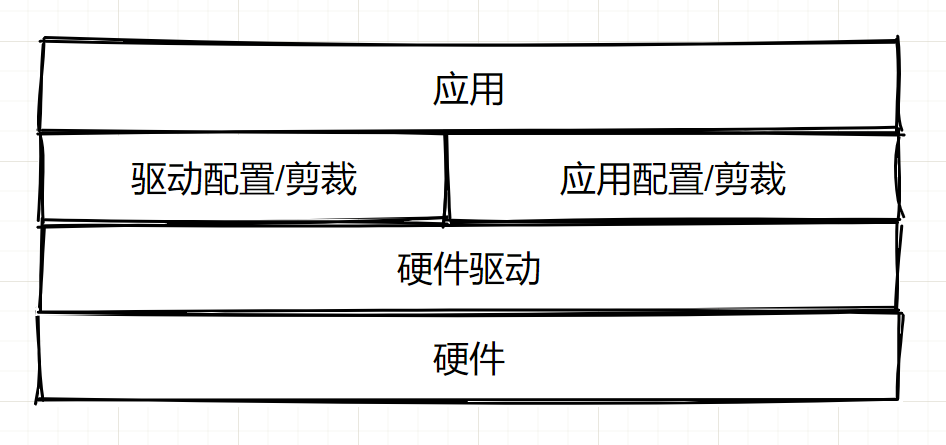
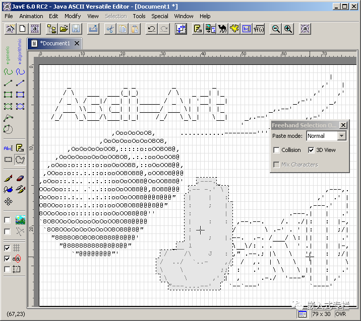
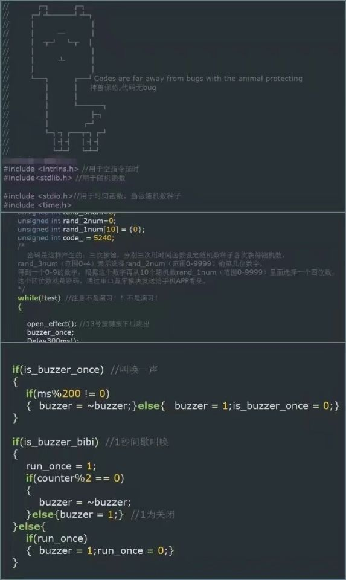

【规范】C & MCU 编写规范和技巧
C & MCU 编写规范和技巧（coding style and more）

本文介绍一些 ANSI C 和 GNU C 的基本语法、编写规范，本文系广泛撷取、借鉴和整理，侵删。本文适合刚入门的人阅读和遵守，也适合已经有较多编程经验的人参看。如有错误恭谢指出！本文已经是长期积累和堆叠而形成一定规模，不必按照从前到后的顺序去看，可以挑感兴趣的章节去看。
本文内容较多，推荐从 4 普适规则（General rules） 一节开始看起。
本文存在对应的 Github/Gitee 仓库地址，本文最新的原文 和 一些源码、备查手册等等 均放在里面。
按 1：引用观视频工作室视频【大师计划·林宝军03】北斗三号总师：我来跟你说说，…里面总师受访时所说的话：
5:48：“…所以我经常讲，要把一个产品做好，其实有三方面，一个是技术，一个是质量，一个是管理，这三方面；技术水平，质量保障能力和管理能力，三条腿哪个都少不了，少一个，这个东西（航天）也做不上去，其实技术只是一方面，…”。
6:44：“…光是技术上去了，不见得能做出一个系统。对我们工程来讲，就是（需要）规范的文化，什么意思呢，比如我们几十年的航天经验，我把这个经验总结成文字，总结成规范，不管是谁做，只要有一定的经验，按这个规范做出来，做得卫星出来，打到天上去就能好用，这就是规范文化。包括匠人文化和规范文化，最后都是按规矩去做，它强调的是解决了怎么做的问题，但它有一个缺点，没强调为什么，其实我认为在做的过程中，加个为什么可能更好。”
按 2：引用 雷军写代码水平如何？ - 知乎 (zhihu.com)。
雷总也在给后辈的寄语中不断强调代码要整洁，逻辑要无懈可击，自己写的代码要达到例程（示范程序）的程度。这一点和《代码整洁之道》的作者 Bob 大叔英雄所见略同了。
Bob 大叔就在《代码整洁之道》提出一种观点：代码质量与其整洁度成正比。
优秀的系统往往有优秀的结构设计，层次清晰，职责单一，模块化，方便拓展和复用。功能的添加往往只是在现有的框架中添加一个个模块和少量代码。
O 目录
[TOC]
1 日常素养
-
维护干净整洁的编程环境（保持愉悦的心情，干净整洁的桌面，友好和蔼（或者憨厚）的同事等等）。
-
身体坐直，按时走走，保证睡眠，计划运动。
-
要学习或使用新东西，全网搜集到好的手册和资料，就已经成功了一半（所谓好的资料不一定是官方教程或手册，可以是别人总结的入门系列文章或视频，适合自己快速摄入的才是好的）。
-
循序渐进，由浅入深。对什么也不感兴趣、不深入是浮躁，而且不经过深入全面的了解就硬扛大型项目也是一种浮躁。
-
习惯去看源代码（熏陶优秀代码风格，有时还能发现新东西）。
-
先搞清楚需求，再构思，再开发，顺序不能错。
-
尽量不要重复造轮子，时常逛开源网站，有新想法可以先去找轮子（注意遵守其开源协议），也许比自己写的更好，相信前人的智慧和同行们雪亮的眼光。
-
关于调试：
- 编译错误，如果不明白哪错了，直接无脑复制编译器的错误信息扔到搜索引擎框，然后点“搜索”按钮（大部分报错都是语法错误）。
- 嵌入式十年调Bug经验总结 - 知乎 (zhihu.com)。
-
关于提问，是一门艺术：
-
有结对编程，协作开发的意识。
-
有写文档的习惯（对项目写文档，或者日常写博客，或者没事就画一画流程图梳理想法）（不要在技术文章里写“日记”、写“小说”。），条理清晰，简化描述（Keep it stupid simple），并且一定要写上用例，写上例子，写上实例（重要的事情讲三遍）！
-
做好版本管理，有备份的意识（打压缩包写上时间也好，使用 git 工具 也好，放到 U 盘 里也好，传到 个人 NAS 也好）。
-
时常看书，时常看看同行的文章，常读常新。
-
不止技术，不想当将军的士兵不是好士兵（有的人领导能力强，有的人能开发有竞争力的产品，有的人能把知识讲地透彻，有的人理论功底强），时常把视角拉远看一看。
-
对于我自己尽量做到：早起去吃饭，偶尔跑跑步，早睡想疲劳（睡觉的时候如若不易入睡，则想着自己身体和大脑很疲劳，就容易入困）
时常参考优秀设计
在方案设计完之后准备开始实施/实现，不论软硬件，先 全网找优秀的实例、原理图、代码、项目、库来参考实现，不要一上来就自己吭哧做。
广泛借鉴、引入第三方解决方案，或事半功倍。
- 计算机教育中缺失的一课 · the missing semester of your cs education (missing-semester-cn.github.io)，为什么大学c语言课不顺便教一下Linux，Makefile，git，gdb等配套工具链呢? - 知乎 (zhihu.com)。强 烈 烈 烈 烈 推荐看一遍！
- EmbedSummary: 嵌入式大杂烩资源汇总 (gitee.com)。
- programthink/opensource: 【编程随想】收藏的开源项目清单 (github.com)。
- jobbole/awesome-c-cn: C 资源大全中文版，包括了：构建系统、编译器、数据库、加密、初中高的教程/指南、书籍、库等。 (github.com)。
- github 上面的 各种 Awesome 系列 汇总仓库。
规范参考
本文正文中参考的内容
见后面 “11 本文参考源” 一节。
更多参考强烈推荐阅读
- C 语言编程规范 ~ Murphy’s Blog。基于 Markdown 的中文文档排版规范 ~ Murphy’s Blog。
- 嵌入式面试题，不断更新 - 知乎 (zhihu.com)，嵌入式面试题（二），不断更新 - 知乎 (zhihu.com)。
- 嵌入式软件工程师笔试面试指南-C/C++ - 知乎 (zhihu.com)。
- C/C++ 代码风格和规范_路过的小熊~的博客-CSDN博客。代码整洁之道（一）最佳实践小结-阿里云开发者社区 (aliyun.com)。
- .etc
2 程序框架要点
首要地重中之重
-
首要 清晰、明确需求 并 全面调研、收集资源 和 参考精华。如时间允许，开始具体任务开发之前，进行充分调研！包括：1、对要使用的 平台、框架 所提供的 功能、机制 和 能力 做全面的调研，撷取其中适合本任务的场景的部分 做组合 和 在其基础上开发；2、全人脉/全网 搜索相关设计 并 参考优秀设计，分析研究其这么做的原因、思路，对各个设计取其精华。
-
顶层设计 和 细化设计 阶段。理清整系统设计，首先对软硬件做良好的顶层设计/架构设计，详细的画出框图，细化设计保证可以实施、在设计上保证尽量减少可能发生的错误。画好框图、清晰的道明复杂系统机制也是一种难得的能力！
-
层次化 和 标准化 的输出。软件工程结构的分层思想永不灭；标准化、通用化和可靠性设计高于功能设计。

-
你是为了使用而学习，那就快速整起来；你是为了调研/考试而学习，那就全面一些。你不要也不是书呆子。
一些方面的提醒
时间、空间复杂度 的 取舍 和 有意识优化
时间复杂度表示一个算法内执行语句的数量在最坏的情况下随着循环次数 n 的增加而增长的数量级。一个算法内语句的使用次数（频度）表示为 f(n)，n 为算法内循环语句的循环数，n 的变化直接改变 整个算法的语句使用次数；时间复杂度 O(g(n)) 的定义为，对于一个算法，当且仅当存在正整数 c 和 n0，使得 f(n) ≤ cg(n) 对于所有 n ≥ n0 成立，则该算法的渐进时间复杂度为 f(n) = O(g(n))，g(n) 为 n 的函数。
各个时间复杂度的语句频度的增长速度比较：O(log2n) ＜ O(n) ＜ O(nlog2n) ＜ O(n^2) ＜ O(n^3) ＜ O(2^n) ＜ O(n!)，前三个很好，最后两个不可接受，剩余的强差人意。
程序的执行时间不仅依赖于问题规模，还可能随着数据的状态不同而变化，即其时间复杂度会变化，一般评价算法时候取最坏的情况的时间复杂度。
空间复杂度大同小异。
“低耦合，可重用，参数化，注释全”
- 划分好文件、功能函数和所需变量。函数 “低耦合，可重用，参数化，注释全”，变量尽量用结构体打包；可重用意味着直接复制代码或者直接复制文件到另一个项目上直接就用。
- 功能增加裁剪的灵活性：做好预编译设置。方便于切换调试版本和执行版本，方便于切换行为模式，方便于剪裁功能块；功能剪裁用一个名字带 “_config” 的文件集中管理，供用户修改各种剪裁用的宏定义，就像总控台。
- 参数化设计的适应性：对比如协议解析、模块/功能数量增减、数据范围的变化适应等地方尽量写的通用，通过参数设定来改变运行时/编译时的功能灵活变化。
- 设计高效、方便的数据存储的数据结构，设计高效、方便的算法来操作这些数据。
- 关于 MCU 的编写框架，我目前大抵就认我自己的开源项目 “stm32_framework” 的吧，规范都对齐这个项目。
嵌入式 相关提醒
p.s 这里长期更新。
嵌入式 编程 的一些规范
项目 “stm32_framework” 编写时形成的一些经验和规范
更多具体的还以此项目的源码和架构为准！
-
本文章 “C 编写规范” 的全部规则都适用。
-
尽量利用硬件资源和外设资源，减少 cpu 负担。
-
系统外设功能的启用与否均用宏定义 SYSTEM_SUPPORT_XX 来管理剪裁。
-
RTOS 任务函数均使用 os_task_xx_xx() 命名，属于"os_task"。
-
中断优先级分组选用分组 4，即 16 级抢占优先级，不用 0 级响应优先级。
-
IO 的低电平为有效电平，高电平截止或者无效；按键IO尽量都使用外部中断。
-
至少用一个定时器提供 1ms 或者 10ms 的时基，再用软件分频为 50ms/100ms/300ms/1s 等。
-
外设（Periph）和设备（Devices）分别初始化，外设的启停成对编写，命名统一。
-
通讯外设的发送和接收都使用中断，并尽量使用上 DMA，以串口为例如下：
接收：（依时间间隔区分帧为例）
接收中断 -> 打接收标志位，记当前时间（定时器计数器），比较上次接收的时间，启动 DMA -> 接收缓冲区（足够大，大于2帧） -> 送解析函数。
发送：（类 lwip 的 tcp 的发送逻辑，事件驱动）
要发送的串放入 发送缓冲区，检查发送启动标志位是否就绪，若就绪就打 发送启动标志位 -> 发送中断中，检测发送启动标志位，判断是否发送 发送缓冲区 的串，发完清此标志位，即设为就绪态。
-
等等等等。
引自网络的好文章 / 规范经验分享
-
单片机STM32有什么推荐的裸机编程架构么，或者推荐的思路也行，谢谢？ - 知乎 (zhihu.com)：
正常的做法应该是剥离硬件相关部分,把逻辑代码剥离出来在PC上架一个虚拟环境来调试,,等做的比较稳定后,再对接实际的硬件直接接口往下层MCU上移植,好处很多,一个是可以充分使用Visual studio强大的调试和性能分析功能,找bug什么的会比直接mcu上调快几倍几十倍,二是要换平台换MCU也很方便,直接改改底层就能用了,是减少项目库鲁西的一个好办法。
-
.etc
状态机与分级/并发状态机
多任务、复杂流程的整机功能要使用状态机方法来表达、建模和实现。可以多用状态机来完成各种任务，大到整个程序的状态、模式控制，小到具体模块内部的工作实现。
- 多任务、复杂流程的整机功能要使用状态机方法来表达、建模和实现；益于：思路清楚、维护方便、扩展性好；不用状态机编程比较难得到这几个优点。
- 设计状态机要根据需求画状态图，再着手实现。要点：关键是画好状态图、不能进入死循环、不能进入非预知状态、穷举所有可能的分支。
- 在系统的状态划分时，如果细分出的状态特别多，那么要考虑分级状态机或并发状态机（参考书 《基于状态机的嵌入式系统开发》，该书比较老了，思想进行提取）。两种状态机以下分别说。
- 分级状态机属于上下级划分，而并发状态机属于多个状态机没有从属关系而一同运行（并发不等同于并行）。
- 这里介绍两种状态机构建模板/方法，一种是 “一个状态对应一个函数” 的模板，另一种是 “switch-case” 方式。前者为作者自实现的，比较易懂好用，其核心代码开源在 “stm32_framework” 仓库中 F4 里的
\USER\USER\fsm路径内；后者的例子见额外文档/fsm-switch-case实现例子.pdf。
分级状态机
- 系统的顶层状态机一般设计有包括 初始化（init）、运行（run）、待机/空闲（standby）和停机（halt）状态 等这几个最基本的状态，在每个基本状态下又可细分多个状态组成子层状态机。
- 在这里，顶层状态机使用 “一个状态对应一个函数” 的模板来实现，子层状态机使用 “switch-case” 来实现。
并发状态机
- 一个系统物理上可以分为若干个同级别的大块，而每一个大块在信号连接上与其他大块之间有少量联系。如果若干是指 10，此时就可以设计 10 个状态机，每个状态机里有若干状态，而某个状态机里的某个状态的转移条件有其他状态机里的事件发生。
- 意义，比如系统可以划分为 10 个状态机，每个状态机有 3 个状态，如若合成一个状态机，那么将会有 3^10 那么多个系统状态。
- 多个平级的同时运行的状态机（并发状态机）可以任选用上述两种模板/方法构建。
嵌入式 通讯协议 的一些设计要点
-
通讯尽量使用成熟的协议来封装数据。
以打包、解包形式进行通讯。鉴于见识有限，协议选择还需要广泛调研和商榷，以下仅为举例：
- 串口 的 应用层 通讯协议 可以上 Modbus。
- CAN 的 应用层 通讯协议 可以上 CANOpen。
- TCP 的 应用层 通讯协议 还有待确定，需要选择一个支持大带宽的，可以再加上一层 TLS/SSL。可以用 json 格式封装数据。
-
如果要自定串口等接口的通信协议，要考虑的点：
-
数据帧格式规定：
-
自定义数据帧（数据打包）的一般格式为：帧头 — 命令/数据类型枚举 — 数据区长度 — 数据区 — 校验区。
这是一般做法，可以有效避免数据区出现帧头打断接收或解析等等问题；帧头可占一个字节，类型枚举可占两个字节，数据区长度可占四个字节，校验区可占两个字节（可选算法：0xFFFF - 该帧前面的所有字节加和）。
-
如果数据区内有多个数据块，每一块可以按照此一般格式合成：该数据块类型枚举（1个字节） — 该数据块数据长度（1或2个字节） — 该数据块的数据。
-
一帧有确定的长度；如果按照上面的帧格式，可以没有帧尾，也可以加上；帧头和帧尾必须是确定的，帧头和帧尾的选取尽量避免与数据区重合。
-
-
保证一帧尽量连续传输，没有中断；
-
在有限确定的时间内完成发送；
-
数据的发送接收相关的函数与数据的打包和解析的相关函数，编写规范上应相互解耦，可重用；
-
接收完成标志位的置位大抵有 两种/三种 方式：一个是判断有帧头和等待帧尾来判断为一帧，一个是从接收字节开始计时并在一定时间间隔没有接收数据后判断为一帧。但是当一帧数据的格式是确定的时候，就每次都连续接收一帧数据若超时则取消该帧，即前两种方式并用的方式。
-
-
参考 最适合单片机的通信协议，如何设计？ (qq.com)。
这篇提到 通讯协议设计中，一帧消息的结构：Head——Type——DataSize——Data——SUM——Tail。
其 强烈建议您采用 “状态机” 来解析 UART 数据帧，并且把解析工作放在 ISR（中断服务程序）完成，根据 DataSize 确定要连续的接收数据的长度，再进行 SUM 和 判断 Tail，再将整个数据帧提交给进程处理。
只要设计得当，每次进中断只执行 “比较接收数据 -> 更新状态变量 -> 存储接收数据” 这三个处理动作，设计其处理的快速而高效就可以。
-
重传机制。如果检测到通讯数据发生了错误，则要有重传机制重新发送出错的帧。
嵌入式 编程 的鲁棒性相关内容！
-
嵌入式开发中的防御性C语言编程 (qq.com)，下面对该文中内容进行简练提要，再加一点自己的内容。
-
函数的传入参数的合法性检查；防止数据的类型越界，用
#include <limits.h>里面的一些类型极限值宏比较来确定；防止指针、数组的越界；返回标准的错误值。 -
尽量用上 硬件 看门狗；要尽可能早的开启看门狗；不要在中断中喂狗，除非有其他联动措施；喂狗间隔跟产品需求有关，并非特定的时间。当然也不能一味的用 看门狗 去解决 系统 “跑飞”、卡死 等问题，应该思考和解决其根源，软硬件都有可能出问题；调试时候可以不加看门狗，调试稳定之后的正式版/稳定版上可以加上看门狗。
-
关键数据储存多个备份，取数据采用“表决法”。比如，一个关键变量可以分别定义三份（多处备份），并分别指定到三个不连续的 RAM 区中，并在定义时按照原码、反码、0xAA的异或码进行初始化。
1 2 3uint32 plc_pc=0; // 原码 __attribute__((section("MY_BK1"))) uint32 plc_pc_not=~0x0; // 反码 __attribute__((section("MY_BK2"))) uint32 plc_pc_xor=0x0^0xAAAAAAAA; // 异或码当需要写这个变量时，这三个位置都要更新；读取变量时，读取三个值做判断，取至少有两个相同的那个值。
-
对非易失性存储器进行备份存储。非易失性存储器包括但不限于Flash、EEPROM、铁电。仅仅将写入非易失性存储器中的数据再读出校验是不够的。强干扰情况下可能导致非易失性存储器内的数据错误，在写非易失性存储器的期间系统掉电将导致数据丢失。
一种可靠的办法是将非易失性存储器分成多个区，每个数据都将按照不同的形式写入到这些分区中，需要进行读取时，同时读出多份数据并进行表决，取相同数目较多的那个值。
-
软件锁。用于保证 各个函数按照一定顺序被执行，或者 多个变量 按照一定顺序、环环相扣的 被初始化、读写等。举例：写 FLASH 函数内，先判断一个特定设置的安全锁标志ProgStart，只有这个标志符合设定值，才会执行编程Flash操作。如果因为意外程序跑飞到该函数，由于ProgStart标志不正确，是不会对Flash进行编程的。
-
输入开关量容易受到尖脉冲干扰，如果不进行滤除，可能会造成误动作。一般情况下，需要对开关量输入信号进行多次采样，并进行逻辑判断直到确认信号无误为止。输出开关信号，简单的一次输出是不安全的，干扰信号可能会翻转开关量输出的状态。采取 重复/周期性 刷新输出可以有效防止电平的误干扰的翻转。
-
寄存器里面的值容易变化，而 FLASH 的值不容易遭到破坏，在短时间的运行周期里，可周期性读取寄存器（MCU的或者外设芯片的）并于存于 FLASH 中的对应的值比较，若有任何一点不同则重新刷入寄存器。
-
不要出现 “死等” 的语句如
while(!flag);，要设置充分的退出条件，比如至少 超时 或 重复次数超过 某个值 则退出。
-
-
引自 xiaowenxia/embedded-notes: 嵌入式linux软件开发、嵌入式linux驱动开发、c语言、单片机开发、IOT开发等面试要点记录 (github.com)。
Cortex‐M3 有一个可选的存储器保护单元（MPU）。配上它之后,就可以对特权级访问和用户级访问分别施加不同的访问限制。当检测到犯规(violated)时,MPU 就会产生一个 fault 异常,可以由 fault异常的服务例程来分析该错误,并且在可能时改正它。MPU 有很多玩法。最常见的就是由操作系统使用 MPU,以使特权级代码的数据,包括操作系统本身的数据不被其它用户程序弄坏。MPU 在保护内存时是按区管理的(“区”的原文是 region,以后不再中译此名词——译注)。它可以把某些内存 region 设置成只读,从而避免了那里的内容意外被更改;还可以在多任务系统中把不同任务之间的数据区隔离。一句话,它会使嵌入式系统变得更加健壮,更加可靠(很多行业标准,尤其是航空的,就规定了必须使用 MPU 来行使保护职能——译注)。
-
.etc
优化程序执行性能 相关提醒
可以总结为三大方向上去优化：
- 硬件（硬件决定了最高性能，软件实现去逼近。尽量多的利用硬件提供的）。
- 软件编码实现（完成关键任务代码本身的执行效率提升，包括数据结构与算法的精良设计，包括对驱动提供的机制、操作系统提供的机制等等的高效利用）。
- 编译器（理解编译器对代码的编译和优化，让编译器的编译、优化结果达成你想要的）。
具体的里面的道道、经验很多需要慢慢内化、积累。
通用优化策略
-
引自 《深入理解计算机系统》读书笔记 & 要点总结<中> | 浅墨的部落格 (0xffffff.org)。
- 编写高效程序需要几类活动：第一，我们必须选择一组合适的算法和数据结构；第二，我们必须编写出编译器能够有效优化以转换成高效可执行代码的源代码。对于第二点，理解编译器的优化能力和局限性是很重要的。编写程序的方式中看似只是一点点的变动，都会引起编译器优化方式上很大的变化；第三项技术针对处理运算量特别大的计算，讲一个任务分为多个部分，这些部分可以在多核和多处理器的某种组合上并行的计算。
- 尽管做了广泛的变化，但还是要维护代码一定程度的简洁和可读性。
- 程序员必须编写容易优化的代码，以帮助编译器。主要包括：消除循环的低效率，减少过程调用和消除不必要的存储器引用。
- 在实际的处理器中，是同时对多条指令求值，这个现象叫做指令级并行。特别地，当一系列操作必须严格按照顺序执行时，就会遇到延迟界限（latency bound），因为下一条指令开始之间，这条指令必须结束。当代码中的数据相关限制了处理器利用指令级并行的能力时，延迟界限会限制程序性能。吞吐量界限（throughput bound）刻画了处理器单元的原始计算能力。这个界限是程序性能的终极限制。
- 没有任何编译器能用一个好的算法或数据结构代替低效率的算法或数据结构，因此程序设计的这些方面仍然是程序员主要关心的。
-
C语言编程之运行速度优化方法汇总（转载）_automan2019的博客-CSDN博客_c语言常用的运行速度优化方法，C语言编程之运行速度优化方法汇总 - 腾讯云开发者社区-腾讯云 (tencent.com)。
-
etc。
嵌入式 编程 提高 CPU利用效率、降低CPU占用举措列举
- 尽量利用CPU硬件、外设、提供的机制来完成相关任务。比如：
- 乘除法尽量用上FPU和DSP相关的指令。
- 外设数据和内存数据之间的转移尽量使用 DMA（首选） 或 收发中断。
- 收发数据的外设带有 FIFO 则会减少 CPU占用，比如没有 FIFO 则每次来数据都会中断 CPU，而带 FIFO 则会只在其满一次或半满一次的时候才会中断 CPU 来一次性处理一整个大块的数据，大大提高效率。
- 软件编程上需要大块数据转移、传递的时候尽量只传递其指针，即尽量使用内存映射的思路，尽量减少数据的拷贝。
- 优化算法，尽量降低具体模块的运行的时间复杂度。合并计算式，在数学上化简计算至最简再写入程序。合理范围内去减少 CPU 运行的 无效/无用的代码。
- 浅谈嵌入式MCU软件开发之代码风格与代码优化 (qq.com)。
- .etc
可移植性 相关提醒
-
编写可移植C/C++程序的要点-面包板社区 (eet-china.com)。
1、分层设计，隔离平台相关的代码。
2、事先熟悉各目标平台，合理抽象底层功能。
3、尽量使用标准C/C++函数。
**4、尽量不要使用C/C++新标准里出现的特性。**就是说不要太激进。
5、尽量不要使用C/C++标准里没有明确规定的特性。
6、尽量不要使用准标准函数。
**7、注意标准函数的细节。**注意不同平台下相同 API 的微小差异。
8、小心数据标准数据类型。
9、最好不要使用平台独有的特性。
**10、最好不要使用编译器特有的特性。**即少用编译器的特有扩展关键字。
11、注意平台的特性。
个人补充，除非程序本身将来没有移植的打算，那就可以根据平台、工具链等提供的机制 深度地、特制地、独占性地 优化程序。
-
.etc
生成静态库、动态库
p.s 用时现查，再整理到这里。
IT 学习路线
- C语言基础（看书、B站等均可） →
- C语言三剑客：《C和指针》、《C陷阱与缺陷》和《C专家编程》，经典永流传 →
- 数据结构与算法（线性表/树/图/哈希 + 排序/搜索/规划等等等 按需学） →
- 计算机专业学科看。《计算机组成原理》/《计算机体系结构》；《计算机操作系统》/《现代操作系统》/《深入理解计算机系统》；可选《编译原理》、《深入分析GCC》；网络协议如《计算机网络》、《TCP-IP详解卷一/卷二/卷三》等 →
- 可选 《CPU自制入门》 →
- 走向：嵌入式 Linux 方向、FPGA / 芯片设计 / 验证方向、具体某算法方向（如 CV、ML、DL）等等。
更多可详细参考 rd2coding/Road2Coding: 编程之路 (github.com) 的总结，比较全面了。
相关坚韧大厚书
没给出链接的 网搜名字即可。
- 哪本《数据结构与算法》最好？ - 知乎 (zhihu.com) 该回答列举了一些不错的数据结构与算法方面的书籍。
- 《算法导论》（经典）是计算机学科的算法入门书。
- 《计算机体系结构》（经典），《计算机操作系统》/《现代操作系统》/《深入理解计算机系统》。
- 《编码的奥秘》，相关介绍/推荐 想练习《编码的奥秘》里面的知识，有什么软件有帮助？ - 知乎 (zhihu.com)。《编译原理》（经典），《深入分析GCC》。
- 网络协议如《计算机网络》、《TCP-IP详解卷一/卷二/卷三》， 想深入了解 HTTP 协议，有哪些值得推荐的书籍？ - 知乎 (zhihu.com)。
- 嵌入式应用相关：《GNU Make》，《Debugging with GDB》，《Linux 高级程序开发》，《POSIX 多线程程序设计》，《嵌入式Linux基础教程》，《嵌入式Linxu应用开发完全手册》，《嵌入式Linxu应用程序开发详解》。
- 嵌入式底层相关：内核相关：《深入理解Linux内核》，《Linux内核源代码情景分析》，《Linux内核设计与实现》；驱动相关：《Linux设备驱动程序》，《Linux设备驱动开发详解》，《Linux驱动开发入门与实践》。
相关有趣/耐看书或视频
- 学习心得介绍 | 小林coding (xiaolincoding.com)。介绍 | 小林coding (xiaolincoding.com)。
- 13 万字 C 语言从入门到精通保姆级教程2021 年版_极客江南的博客-CSDN博客。
- tangtangcoding/C-CppLearning: C语言与C++学习 (github.com)，内容超多。
- 图解系统 小林，笔记：图解系统（小林coding）_NiXGo的博客-CSDN博客，推荐。
- 图解网络 小林，推荐。
- 趣谈网络协议。
- 手绘图解 HTTP。30张图解HTTP常见面试题。
- TCP/IP 教程 | 菜鸟教程 (runoob.com)。HTTP 教程 | 菜鸟教程 (runoob.com)。
- 《嵌入式C语言的自我修养》 从沙子讲到 CPU，从编辑器讲到编译器，从高阶 C 语言讲到内存管理，从 GNU 讲到多任务编程。
- （完结）（小甲鱼）数据结构和算法_ 哔哩哔哩 _bilibili。
- 国嵌唐老师主讲【数据结构与算法C语言】（非常犀利）_ 哔哩哔哩 _bilibili 讲的慢。
《算法新解》开源书，我为什么加下划线？，《啊哈！算法》。
3 大厂规范和名设计模式
以下强烈建议空闲时认真学一学。
大厂 / 名家规范
- Google 开源项目风格指南——中文版 — Google 开源项目风格指南 (zh-google-styleguide.readthedocs.io)。
- 华为 C语言编程规范
- Qihoo360/safe-rules: 详细的C/C++编程规范指南，由360质量工程部编著，适用于桌面、服务端及嵌入式软件系统。 (github.com)。
- MISRA C Coding Standard。
- [Linux CodingStyle] Linux 内核源代码目录下的 Documentation/CodingStyle 文件。中文：Linux 内核代码风格 — The Linux Kernel documentation。
- 嵌入式软件编程规范 (qq.com)，对文件架构、函数、变量等的规范均有涉及。
- 《航天软件C安全子集-GJB5369标准规范》，离线在本地
\额外文档里。 - 《最强安全关键C代码规则实战手册》，离线在本地
\额外文档里。
设计定律、原则和模式
总结性的：
- guanguans/design-patterns-for-humans-cn: 设计模式超简单的解释。 (github.com)。
- nusr/hacker-laws-zh 对开发人员有用的定律、理论、原则和模式。
- 为了写好代码，你坚持了哪些好习惯？ - 知乎 (zhihu.com)。
- 比较优雅地编码（良好的命名，清晰的结构和不差的算法）。
- 如何正确地使用设计模式？ - 知乎 (zhihu.com)。
- C语言和设计模式（总结篇）_平凡的程序员-CSDN博客_c设计模式。
- 23种设计模式全解析_CodeAllen的博客-CSDN博客。
- 架构与设计 之一 C 嵌入式设计模式（Design Patterns for Embedded Systems in C）的学习记录_itexp-CSDN博客。
- 书籍推荐《调试九法-软硬件错误的排查之道》 - lumang - 博客园 (cnblogs.com)。
- etc.
细分性的：
4 普适规则（General rules）
p.s 以下所有章节中示例代码均以 32 / 64 位机为运行环境，即 int 占 4 字节。
p.s 下文 会出现 遵循 "属什么 _ 是什么 _ 做什么" 的命名形式 的规范，但是也推荐反过来，遵循 “做什么 _ 是什么 _ 属什么” 的命名形式。
-
第一条，请您重视编写规范！可以有代码洁癖。
-
参考 “10 大厂规范和名设计模式” 一节里面的更全面的规范总结，这里只点到有限的部分。
-
使用 C99 标准（某些仅支持 C98 的 IDE 除外）。
-
一个 tab 四个空格（对于 Vscode、Notepad、Eclipse、Vim 和 MDK/Keil、IAR 等编辑器，都应该设置按一下 tab 为输入四个空格，这样文本样式在不同编辑器里打开尽量不会乱）。
-
运算符前后空一格，给函数传递的多个变量之间在逗号后空一格，一元操作符后不要加空格，例子如下。
1 2 3 4 5for(i = 0 , tempNum += 3; i < 6; ++i) /* i，j，k 永远滴神 */ /* for(i = 0; i < 6; ++i) 这么写是循环 6 次，可以记住 */ tempNum = tempNum + 3, tempNum += 3; int32_t tempNum = sys_example_sum(4, 3); sys_example_func(&time_data_struct, !(++is_time_show)); -
注释里，字母和数字的两边空一格，尽量用
/* ……… */注释，而非//...，例子如下。对于注释遵循 Doxygen（详见关于注释的形式（Comments）一节） 等规则的除外。1/* 用 3 这个数字代替洋文 three 了解了吗 */ -
关于命名。
-
文件统一采用小写命名。
-
变量和函数的命名都只用小写（尽量），宏定义使用全大写（尽量），并遵循 “属什么 _ 是什么 _ 做什么” 的命名形式，如：sys_irq_disable()，该 API 属于 sys 级别函数，是 irq 管理，做 dsiable 的功能。不要用晦涩的英文缩写甚至拼音就不用讲了吧。
-
具有互斥意义的变量或者动作相反的函数应该是用互斥词组命名，例子如下。
add/remove begin/end create/destroy insert/delete first/last get/release increment/decrement put/get add/delete lock/unlock open/close min/max old/new start/stop next/previous source/target show/hide send/receive source/destination copy/paste up/down
-
不要使用单字节命名变量，但是允许使用 i， j， k 这样的作为局部循环变量。
-
关于函数、变量、宏定义等的命名看
5 具体各部分的规范形式章节。
-
-
控制语句总加括号（即使分支执行语句只有一句），成对的括号要在竖方向上对齐，用 tab 把层次分地清清楚楚，例子如下（为了节省空间，下面示例用横向写~）。
1 2 3 4 5 6 7 8 9 10 11if( ) for (i = 0; i < 6; ++i) do switch (check()) { { { { case 0: }else if( ) } }while( ); fsm_do_a(); { break; case 1: }else fsm_do_b(); { break; default: } break; }- 对于多个条件的 “与”、“或” 等操作，应该将每一个条件都用括号括起来，层次分明，如：
if ( ( (c == ' ') || (c== '\n') ) && (b == '\t') ){;}。 - 分支控制语句要写明所有分支情况，每一个条件都有明确的去向，对于 if 必带 else，对于 switch 必带 default，诸如此类。
- 对于多个条件的 “与”、“或” 等操作，应该将每一个条件都用括号括起来，层次分明，如：
-
无限循环尽量用
for(;;)替代while(1)等；条件循环语句用后者。 -
层次分明，多用 tab 划分层次关系（预编译部分代码也不例外），例子如下。
1 2 3 4 5#ifdef _DEBUG #define DEBUGMSG(msg,date) printf(msg);printf(“%d%d%d”,date,_LINE_,_FILE_) #else #define DEBUGMSG(msg,date) #endif -
长运算语句尽量多的用括号（每一步运算都用括号括起来），并做好空格增加可读性，例子如下。
1 2temp = ( 0x7F << ((xByte - 1) * 8) ); #define MAX( x, y ) ( ((x) > (y)) ? (x) : (y) ) -
用
if (check_func()) { ... }代替if (check_func() == 1)，判断是否为 ‘0’ 可以用后者的写法（即check_func() == 0 或 NULL，或者用!check_func()），判断 ‘1’ 用前者写法。 -
判断指针是否为空只用 “NULL”，即
void *ptr0, *ptr1; if ( (ptr0 == NULL) || (ptr1 != NULL) ) { ... }。 -
不用变长数组，用内存 分配/释放 函数
malloc()和free()。 -
大块内存请使用内存管理。
-
尽量减少数据传输过程中的拷贝，对于全局变量的字符串、数组和结构体等，采用传递指针的方式。
-
文件操作中 open 和 close 成对使用，内存管理 malloc 和 free 成对使用。
-
关于源文件、头文件和变量作用域等。头文件里的大学问，C语言需要注意这些原则… (qq.com)。
- 变量、API 的作用域要明确：定义时带有 static 修饰符的变量（无论是声明在在某个函数里还是函数外）是 只在该文件具有作用域的，其他文件不能够访问到。一个文件的变量声明都放在 .h 里面，公有变量声明时 加 extern 修饰符 以供其他文件调用，私有变量声明时不加 extern 修饰符。明确好所有变量和函数在工程中的调用范围，由此来控制其作用域的 缩小 / 尽量最小化，减少不必要的 调用 / 引用，对编译时间和管理都有好处。
- 非必要的不引用：在 .c 文件中 include 自己对应的 .h 文件和需要用到的 .h 文件，不要引用多余的 .h 文件；.h 文件中同样只引用用到的头文件；头文件尽量写成无依赖的；尽量减少依赖，这就考验整个系统的规划和设计。
- 不一定 一个 .h 文件对应 一个 .c 文件：如果 一个模块 包含了多个 .c 源文件来实现，那么将它们放入同一个文件夹并用模块名命名，然后只用一个 .h 头文件声明 该模块的 接口。
- 关于开源协议:Every file (header or source) must include license (opening comment includes single asterisk as this must be ignored by doxygen). Use the same license as already used by project/library.
- 对于 .h 文件，其基本格式如下。每一个文件在最后留有至少一个空行。
|
|
- 理论上讲，任何递归算法都可以通过循环等方法实现，尽量不用递归，不好查阅和容易栈溢出。
- 更多网友总结的杂类细节规范、规则：
5 具体各部分的规范形式
参考 “10 大厂规范和名设计模式” 一节里面的更全面的规范总结，这里只点到有限的部分。
关于函数定义形式（Functions）
-
小写；星号 * 靠近类型名一端；用" _ “分割语义；对齐以保持良好阅读性。
-
命名遵循
属什么 _ 是什么 _ 做什么的形式，例子如下。1 2 3 4 5 6void sys_example_init(void); const char* sys_string_generater(void); my_struct_t* sys_example_hello(int32_t para1, int32_t para2); void fsm_state_set(int32_t fsm_ID); my_type_t fsm_state_get(void); my_ptr_t* menu_get_current_ptr(void); -
函数的局部变量数量最好不超过 5 - 10 个，即不要占用太多的内存/栈资源。
-
一个函数尽量只做一件事，否则划分为多个更小的函数；不要重复，保持各个代码块的独特性。
-
低耦合，可重用，参数化，注释全！
-
对函数的传入的实参做合法性检查。检查指针（ptr == NULL 就 return -1）；检查变量范围，变量有大小限制的，在注释里写明；在其他地方调用此变量的时候要进行检查或限幅，例子如下。
1 2 3 4 5 6 7 8 9 10/* 幅值系数，范围 0~1 */ float wave_point_A = 0.8; /* 检查：*/ if( wave_point_A > 1 ) wave_point_A = 1.0f; if( wave_point_A < 0 ) wave_point_A = 0; /* 限幅：*/ wave_point_A > 1 ? 1.0f : wave_point_A; wave_point_A < 0 ? 0 : wave_point_A; -
如果函数传入参数（形参）的数量过多（超过 5 个），那么要考虑精简或者用其他办法，即可以将参数打包为全局的 数组 或 结构体 等 然后传递其指针；函数形参为一个指针变量则用
int* i形式，形参为一个数组应写为int i[]（并且另一个形参要传入数组的最大长度，因函数内无法获知，字符串除外，因其结尾会被补充\0），在此时应做区分而避免混用；对于返回多个值同理；字符串指针 和 结构体指针 等在定义时若未初始化，则使用前要用malloc()为其申请空间，否则就是野指针，对其赋值将直接导致 “宕机”（so weak）。 -
对于函数可能传入的参数是不定的任意类型，对于指针类型定义形参用
void* x，对于变量用void x。函数明确 没有/不能 传入/返回 参数时要在形参处用void指明，如上面的void sys_example_init(void);。 -
对函数的错误返回要做全面的处理；一般 返回 0 表示 正确 或 运行正常终止，返回其他表示错误，具体的值表示错误代号，可用定义了所有错误类型的枚举变量作为函数返回值类型，或者返回值 0 表示成功，正数表示失败，此正数可以表示错误代码；并设计专门的机制对错误标识做处理。
-
函数的嵌套不要过多，一般控制在最多 4 层。不要用递归这种反阅读便利的写法（并且控制不好易栈溢出），用循环语句实现。
-
关于 指针函数 和 函数指针。
指针函数即指 返回值带指针变量的函数，使用情景参看上面。
函数指针即指 函数类型的指针，定义的形式和使用情景如下，函数指针名加后缀 “_ fn”，函数指针类型定义名再追加后缀 “_ t”。
TODO：有待吸收的 C语言函数指针的六个高级应用场景 (qq.com)。
1 2 3 4 5 6 7 8 9 10 11 12 13 14 15 16 17 18 19 20 21 22 23 24 25 26 27 28 29 30 31 32 33 34 35 36 37 38 39 40 41 42 43 44 45 46 47 48 49 50 51 52 53 54/* 函数指针定义写法和用法举例 */ unsigned char (*sys_print_compile_time_fn)(unsigned char); typedef unsigned char (*sys_print_compile_time_fn_t)(unsigned char); unsigned char print_compile_time(unsigned char is_print) { if(is_print) { printf("%s\n",__TIME__); return 0; } return 1; } unsigned char print_compile_date(unsigned char is_print) { if(is_print) { printf("%s\n",__DATE__); return 0; } return 1; } int main() { /* 用法1，给函数指针赋值 */ sys_print_compile_time_fn = print_compile_time; /* 用法2，定义一个函数指针变量，并赋值 */ sys_print_compile_time_fn_t print_compile_time_fn; print_compile_time_fn = print_compile_time; /* 调用 */ (*sys_print_compile_time_fn)(1); (*print_compile_time_fn)(1); /* 改变函数指针指向的函数，再调用 */ print_compile_time_fn = print_compile_date; (*print_compile_time_fn)(1); } /* 再举一个例子，引自 《C程序设计语言》 */ /* 一些声明 */ char *lineptr[500]; int numcmp0(char *, char *); /* API 声明时形参可以不带变量名 */ int strcmp0(char* stri1,char* str2); void qsort(void *lineptr[], int left, int right, int (*comp)(void *, void *)) { ... if ((*comp)(v[i], v[left]) < 0) {...} ... } /* 调用，三段式写法来选择传入哪个API，再强转为一个函数指针类型 (int (*)(void*,void*)) */ qsort((void**) lineptr, 0, nlines-1, (int (*)(void*,void*))(numeric ? numcmp : strcmp)); -
内联函数。可以将 频繁被调用的、代码量较少的 函数用 inline 关键字修饰为内联函数，编译器将 该函数内容直接复制到 被调用的地方，减少频繁进出函数的处理器开销，但如果调用的地方极多则整体代码量急速膨胀。
关于变量定义形式（Variables）
-
小写，对齐以保持良好阅读性。
-
同类型的变量声明放在一行，变量定义时避免用函数返回值。
-
命名中 用下划线
_分割语义，命名遵循 “属什么 _ 是什么 _ 做什么” 的形式，要意义明确。命名开头以两个下划线或一个下划线的约定俗成保留给系统，因此普通应用中应避免。 -
避免使用 stdbool.h 里的 “true” 或 “false”，用 “1” 或 “0” 代替。
-
变量类型，除了char* 、float 和 double，都使用 stdint.h 库（对于不同位数的机器，使用这个文件里面的类型定义，可以明确每个类型的长度）里面的，统一起来。整文件或整工程中变量定义处的变量关键字修改，可以用 批量替换 来完成，如 统一的将
INT8修改为char。1 2 3 4 5 6 7 8 9 10 11 12 13 14 15 16 17 18 19 20 21 22 23 24 25 26 27 28 29 30 31 32 33 34 35 36 37 38 39 40 41 42 43 44 45/* signed int 和 unsigned int 区别很大，前者是可以表达正负数的源码，后者是从 0 开始的正数或是一串参与逻辑运算的二进制 */ /* 定义一些常用的数据类型短关键字，为兼容性附加，可选 */ typedef int32_t s32; typedef int16_t s16; typedef int8_t s8; typedef uint32_t u32; typedef uint16_t u16; typedef uint8_t u8; typedef const int32_t sc32; typedef const int16_t sc16; typedef const int8_t sc8; typedef const uint32_t uc32; typedef const uint16_t uc16; typedef const uint8_t uc8; /* 以上 12 个的左边的关键字 来自 对于 32 位机的 stdint.h */ /* 以下定义要随着平台的切换而有可能切换， 比如 8 位机的 8051 MCU 中 int 为两个字节，Nios II 处理器 中 int 为 两个字节 32 位机（如 STM32）中 int 为四个字节， 64 位机同 32 位机 */ /* 这里针对的是 32位/64位 机器而言，即 int/float 为 4 字节 */ typedef unsigned char uint8; /* 8 bits */ typedef unsigned short int uint16; /* 16 bits */ typedef unsigned int uint32; /* 32 bits ,long int 也为 32 bits */ typedef signed char int8; /* 8 bits */ typedef short int int16; /* 16 bits */ typedef int int32; /* 32 bits */ typedef volatile int8 vint8; /* 8 bits */ typedef volatile int16 vint16; /* 16 bits */ typedef volatile int32 vint32; /* 32 bits */ typedef volatile uint8 vuint8; /* 8 bits */ typedef volatile uint16 vuint16; /* 16 bits */ typedef volatile uint32 vuint32; /* 32 bits */ typedef float float32; /* 32 bits */ typedef double float64; /* 64 bits */ typedef unsigned char boolean; /* 8-bit*/ -
变量 定义/声明 时 应 合理的、常用 / 尽可能使用 const “修饰”，防止 变量 或 指针 在层层传递过程中 被无意篡改，例子如下。
1 2 3 4 5 6 7 8const unsigned char xByte; /* xByte 的内容不能变 */ const char *p; char const *p; /* 二者一样，都是 p 所指向的内容不能变 */ char* const p; /* const 修饰的是 p ， p 不能修改，即地址不能修改，其指向的内容可以修改 */ const void* const p; /* p 所指向的内容和 p 地址本身都不能改变 */ /* 若变量是 const 修饰的，则其地址 也不能赋值给其它指针，以防止通过该指针修改其值；const 修饰的 数组 也将不能 取其地址 来给别的指针 赋值 */ /* p.s 对于单独定义一个指针并且不赋初值的情况，char* c; 与 char * c; 与 char *c; 没有任何区别。 */更多补充 C/C++里 const int* 与 int const* 有什么区别？ - 知乎 (zhihu.com) 其中写到：
const 默认作用于其左边的东西，否则作用于其右边的东西。
-
定义变量
int i = ‘0’;，注意int* i_ptr = &i;与char *i_ptr = &i;的区别，前者是将 i 的地址赋给 int 类型指针变量 i_ptr，后者是 将 i 的地址赋给整形变量 *i_ptr，注意 C 编译器并不认为 该 二者的不同，都是将 i 的地址赋给 int 类型指针变量 i_ptr，只是对于人从惯用语法来讲会觉得不同。因此对于写法规范，定义指针的三种写法int* i_ptr;、unsigned int * i_ptr;、int *i_ptr, *l_ptr, *a_ptr;，分清这三种场合，第一个 单独定义一个指针（把 * 靠近类型名），第二个 指针类型名 超过一个单词（则把 * 写在中间），第三个 多个指针定义（把 * 靠近变量名）。（我怎么感觉我在讲 “茴” 的几种写法，，搞编程嘛，这里需要细致一些） -
指针变量在 定义 的时候就 尽量 给确定的地址变量 而 防止 其成为 野指针 的可能；尽量避免野指针。
-
关于指针相关灵活用法更多详见
实用技巧一节里的指针专题部分。 -
防止 指针、数组越界，要清楚其所知内存空间的大小，即其可操作的范围。
-
明确全局变量的初始化顺序，系统启动阶段，使用全局变量前，要考虑到全局变量该在什么地方初始化，使用全局变量和初始化全局变量之间的时序关系一定要分析清楚。
-
明确变量的作用域，防止在预想的作用域外能够调用到具体的某个变量，降低模块间耦合度。对于函数内的局部变量，不希望在函数跳出后局部变量数据丢失那么加上 static 修饰符（指示该变量具有所在函数的作用域），static 修饰符的变量若定义在一个文件内当作 “全局变量”，其是 只在该文件具有作用域的，其他文件不能够访问到。
-
为防止编译器优化程序中一些 关键/重要 的变量的给值顺序等，可在变量定义时加 volatile 声明，即不要优化掉这里，中断或其它线程公用一个变量 或 这个变量是寄存器相关的东西（寄存器地址或寄存器值） 的时候，就应该加。
-
玩一下，比较极端的情况，一个完整的变量声明形式：
extern static volatile const unsigned long int * const temp_reg[sizeof(int)];。 -
变量如果是低有效，变量名加尾缀 “_n”，比如使能 en 是低有效（en 上面有一横），则命名为 “en_n”。
-
尽量减少不必要的数据类型转换，即 “类型强转”。关于 “类型强转”，要先看位数，低位数类型可以向高位数类型强转，而这个过程反过来的时候，高位数类型直接转换为低位数类型则高位会被丢弃，因此对于高位数类型的数值应该先取 低 八位/十六位/三十二 等 位，再强转，这样是比较安全和方便阅读的做法。参考
实用技巧一节里 “巧用 按位 与/或/非 来 组合想要的二进制序列” 的示例代码。
关于结构体、枚举和类型定义形式（Structures, enumerations, typedefs）
-
适用 “关于变量定义形式（Variables）” 一节里面的内容。
-
枚举定义形式有直接定义、类型定义、指针和数组等，枚举内可以嵌套定义结构体，结构体内也可以嵌套定义枚举。
-
结构体和枚举可以用 typedef 修饰。
-
结构体里的成员小写，枚举里的所有成员大写。
-
结构体应尽量不作为函数的形参或返回值等，而是用其指针替代，减少数据拷贝。
-
结构体定义后加“_ struct”尾缀，对于类型定义后再追加 “_ t”，对于枚举同理，例子如下。
1 2 3 4 5 6 7 8 9 10 11 12 13 14 15 16 17 18 19 20 21 22 23 24 25 26 27 28 29 30 31 32 33 34 35 36 37 38 39 40 41 42 43 44 45 46 47 48 49 50 51 52 53 54 55 56 57 58 59 60 61 62 63 64 65 66 67 68 69 70 71/************************* 枚举定义 *************************/ enum errType_enum { RETURN_OK = 0, RETURN_ERR_1, RETURN_ERR_2, RETURN_LAST /* 值为 3，同时也是所在枚举定义的枚举数量 */ }; typedef enum { MY_ENUM_OK = 0, MY_ENUM_TESTA, MY_ENUM_TESTB, MY_ENUM_LAST }my_enum_t; /* 定义一个函数，使用两种枚举，一个作为形参，一个作为返回值 */ enum errType_enum sys_process_hello(my_enum_t my_para); /************************* 结构体定义 *************************/ struct simple_struct struct /* 只用一次的结构体 */ typedef struct { { { int a; int a; int a; char b; char b; char b; double c; double c; double c; }simple, *simple_p; }abc; }simple_struct_t; /* 使用 sizeof() 获取结构体大小（字节为单位），而实际存储占用长度会因字节对齐而不确定 可以使用 gcc 扩展关键字 pack() 来将结构体或其它数据结构 按字节/按四字节 等方式 对齐 */ struct simple_struct simple0; struct simple_struct* simple0_p = &simple0; /* 定义结构体变量和其指针一对，并给指针赋值 */ simple0_p->a = simple0.b; /* 取值，赋值 */ struct simple_struct simple1[10] = /* 结构体数组定义，并赋值 */ { {1, 2, 3}, {3, 2, 1}, ... }; /************************* 位段 *************************/ /* 结构体内还可以对成员声明位段（有的地方也叫 位域），即声明每个成员占用的 bit 数。 不多见，位域（bit fields）在不同编译器之间是不可移植的，同时也保证代码是不可重用的。 */ /* 成员必须为无符号整型 */ struct mybitfields { unsigned short a :4; unsigned short b :5; unsigned short c :7; }test; /* 幅值 */ test.a = 2; test.b = 31; test.c = 0; /* 赋值后 的实际情形 16bit 的实际值： 0000 0001 1111 0010 16bit 的 abc 占用位置： ccc ccccb bbbb aaaa */ struct date_struct { unsigned char day :5; unsigned char month :4; unsigned short year :14; }date; /* 0 | 0 0 0 0 0 0 0 0 0 0 0 0 0 0 | 0 0 0 0 | 0 0 0 0 0 | |--------- year --------------|- month -|---- day ---| */ -
结构体的实例化尽量用 “表格” 形式，并在每列头部写好注释，例子如下。
1 2 3 4 5 6 7 8 9 10 11 12 13 14 15struct fsm_states_struct fsm_XXX1_state[XXX1_State_MAX] = /*定义描述名为‘fsm_XXX1’的状态机的状态图*/ { /*跳转条件都初始化为0*/ /* 状态 执行函数 跳转条件数量 各个条件跳转后的状态（注：根据跳转条件的优先级从高到低往下写）*/ {(unsigned int)XXX1_State_1, fsm_XXX1_state_1_Fun, 2,{ {0,(unsigned int)XXX1_State_5 }, {0,(unsigned int)XXX1_State_2 }, }}, {(unsigned int)XXX1_State_4, fsm_XXX1_state_4_Fun, 1,{ {0,(unsigned int)XXX1_State_5 }, }}, }; /* 或者 */ simple_struct_t simple = { .a = 65530, .b = 125, .c = 1.0 }; -
关于结构体的内存对齐在
GNU C 扩展语法一节内有讲。
关于联合和其类型的定义形式（union）
-
联合的长度为其中最大一个变量/数组的长度，定义形式同样有直接定义、类型定义、指针和数组等，联合内可以嵌套定义结构体，结构体内也可以嵌套定义联合；定义枚举类型要加 “_union” 尾缀，其它尾缀依上面所说类推。
-
联合应尽量不作为函数的形参或返回值等，而是用其指针替代，减少数据拷贝。
-
联合的定义和应用情景举例如下。
1 2 3 4 5 6 7 8 9 10 11 12 13 14 15 16 17 18 19 20 21 22 23 24 25 26 27 28 29 30 31 32 33 34 35 36 37 38 39 40 41 42 43 44 45 46 47 48 49 50 51 52 53 54 55 56 57 58 59/************************* 一、四字节整形可以直接取每一个字节 *************************/ /* 举例 1 */ union simple_union { int var_int; char var_char[4]; } union simple_union four_bits.var_int = 0xaabbccdd; /* 即 var_char[0] 为 0xaa，var_char[1] 为 0xbb，以此类推，按数组从左到右增长的方式排列对齐 */ /* 举例 2 */ union { int i; /* 占四字节 */ struct /*在联合中定义一个结构*/ { char first; char second; }half; /* 占俩字节，与 四字节的 i 低位对齐 */ }number; number.i = 0x44434241; /* 联合成员赋值 */ /* number.i 的低俩字节给了 half 结构体，即 number.half.first 为 0x42，以此类推 */ /* 通过上面两个举例可以看出，在字节 拼接 和 检出 时使用 联合 非常方便 */ /************************* 二、两个 程序/线程 要以不同的最小单位访问同一块内存 *************************/ typedef struct{ int ram_full_flag; int ram_store_flag; int ad_channels_en; union{ u8 ram_store_data[8][512]; u16 ram_send_data[8][256]; }_ram; }_RAM_FORMAT; _RAM_FORMAT RAM_Format; /* 可以看出 结构体里面的枚举，同一块区域内分别以 8 位和 16 位划分， 以 8 位为最小单位接收，以 16 位为最小单位发送 */ /************************* 三、联合 和 结构体 + 位域 结合，可以访问一个字节的每一个 bit *************************/ typedef union { char Val; struct __packed /* __packed 修饰，结构体字节对齐 */ { char b0:1; char b1:1; char b2:1; char b3:1; char b4:1; char b5:1; char b6:1; char b7:1; } bits; }BYTE_VAL, BYTE_BITS;
关于宏定义和预编译指令定义形式（Macros and preprocessor directives）
-
宏定义使用全大写（尽量），并遵循 “属什么 _ 是什么 _ 做什么” 的命名形式。
-
尽量把常数数字用宏定义代替；常量建议使用 const 定义来代替宏；前面这两句话实际是矛盾的，因地制宜吧，优化速度用前者，优化空间用后者。
-
对宏定义中的所有输入和输出（整个结果语句）用括号保护起来，举例如下，长句用
do{...}while(0)。1 2 3 4 5 6 7 8 9#define MY_MACRO(x) ((x) * (x)) #define MIN(x, y) ((x) < (y) ? (x) : (y)) #define SET_POINT(p, x, y) do{ (p)->px = (x); (p)->py = (y); }while(0) /*或者下句更好：*/ #define SET_POINT(p, x, y) do{ \ /* Backslash indicates statement continues in new line */ (p)->px = (x); \ (p)->py = (y); \ }while(0) /* 2 statements. No semicolon after while loop */ -
预编译指令语句使用 tab 标识好层次，举例如下。
1 2 3 4 5 6 7 8#if defined(XYZ) /* Do when XYZ defined */ #if defined(ABC) /* do when ABC defined */ #endif #else /* Do when XYZ not defined */ #endif -
更多实用的宏定义见
6 常用宏定义一节。
关于注释的形式（Comments）
-
注释里尽量写为什么，而不是把重点放在做了什么，虽然后者也很重要。
-
尽量使用 Doxygen 的注释语法，然后可以使用 Doxygen 这个软件从源码工程的注释中自动化生成软件工程的说明文档，注释写的全（包括文件和API等的描述等等）那么生成的文档也会很全。Documented code allows doxygen to parse and general html/pdf/latex output, thus it is very important to do it properly。目测目前我见过的用源文件产生手册的大型项目有：LWIP、FreeRTOS、ST HAL、CMSIS等，关于 ST HAL 库里面的注释形式的详细情况请看 “8 ST HAL 的编写形式” 章节！
-
Doxygen 的注释语法规范。网上很多，这里列举几个：
需要注意的是，Doxygen 并不处理所有的注释，其重点关注与程序结构有关的注释，比如：文件、类、结构、函数、全局变量、宏等注释，而忽略函数内局部变量、代码等的注释。先从文件开始注释，然后是所在文件的全局函数、结构体、枚举变量、命名空间→命名空间中的类→成员函数和成员变量。
-
使用 Doxygen 生成文档的教程（这几个教程里面也包含有 Doxygen 的语法介绍）：
-
Vs Code 的 Doxygen 格式注释生成插件：
- Doxygen Documentation Generator - Visual Studio Marketplace，用这个，官方比较全。或者在 VScode 扩展里 安装 C/C++ Extension Pack，里面包含了许多 C/C++ 实用扩展，包括 Doxygen Documentation Generator。
- Vs code自动生成Doxygen格式注释_wang0huan的博客-CSDN博客。
p.s 关于 Doxygen 文档的更多具体写法用时再详看进行手写，或者使用生成插件
-
-
下面列举几种花哨的，其中有我自己“创造”的。函数定义的注释，主任务函数的注释，用于显眼！
1 2 3 4 5 6 7 8 9 10 11 12 13 14 15 16 17 18 19 20 21 22 23 24 25 26 27 28 29 30 31/*__________函数简述_____________*/ /******************************** * 描述：函数详细描述 * 参数： 1、第一个形参名 描述 2、第二个形参名 描述 ... * 返回： 返回值类型 描述 ********************************/ /*____________运行错误提示和打印______________________________*/ /************************************************************ * 描述：表示某步骤运行有问题，串口提示，灯提示，声提示 * 参数： 1、errmsg 错误或者警告信息 2、errid 故障代号 3、err_flag 错误类别（可选flag_Fault或flag_Warning） * 返回： NULL ************************************************************/ /*************\ * Multi-line * * comment * \*************/ /*************\ ************************************* Multi-line ***************************************************** * comment * \*************/ /*______________________\\\ ///__________________________* *___________________________________外设初始化函数_______________________________________* *_______________________/// \\\__________________________*/文件说明注释：
1 2 3 4 5 6 7 8 9 10 11 12 13 14 15 16 17 18 19 20 21 22/************************************************* 开头这里放开源协议的描述源文 Copyright © xxx Co., Ltd. 1998-2018. All rights reserved. File name: 文件名 Author： 作者 Version: 版本号 Description: 用于详细说明此程序文件完成的主要功能，与其他模块 或函数的接口，输出值、取值范围、含义及参数间的控制、顺序、独立或依赖等关系 Others: 其它内容的说明 Log: 修改日志，包括修改内容，日期，修改人等 *************************************************/ // Doxygen 格式 /** * @file main.c * @author your name (you@domain.com) * @version 0.1 * @date 2021-06-30 * @license GNU General Public License (GPL) * @brief * @attention * */ -
程序文件开头的版权信息写法列举：
引用自软件中声明版权的写法-专业指导文档类资源-CSDN下载，侵删。
正确的格式应该是：Copyright [dates] by [author/owner]
© 通常可以代替Copyright, 但是不可以用(c)。 All Rights Reserved 在某些国家曾经是必须的，但是现在在大多数国家，都不是法律上必须有的字样。
参见下面几个正确的格式：
©1995-2004 Macromedia, Inc. All rights reserved.
©2004 Microsoft Corporation. All rights reserved.
Copyright © 2004 Adobe Systems Incorporated. All rights reserved.
©1995-2004 Eric A. and Kathryn S. Meyer. All Rights Reserved.
请注意标点符号和大小写的用法，这也是专业精神的一种体现。
现在流行some rights reserved：creativecommons.org
some rights reserved 和copyright 本身并不矛盾，但是其中的界限更多是一个道德问题，真正的保留一部分权力，是指给浏览者fair use 的权利，fair use的界定也决不是随便乱用，或者抄袭。
甚至说，除了copyright, 还有copyleft,它的定义是为了程序员开发能够共享源代码的一个方式，英文里free, 并不仅仅是免费。 而且这种的源码公开免费使用，和版权也一点都不冲突。请大家不要误解。
关于代码格式化工具列举（Code formatter）
p.s 针对较乱的"祖传代码"做初步治疗使用。代码格式化工具还可以把代码中的 tab 符变成四个空格，这样，当代码在不同的编辑器中打开时不会产生格式错误，所以可以用 AStyle 自己定制一份配置文件，在每次码完代码之后顺手运行一下 AStyle 即可。
(TODO)下面部分条目尚未补全。
(TODO)查一查astyle配置文件的用法，按照自己的规范形式，写一个配置文件
-
通用工具 AStyle：
配置文件： c-code-style仓库中的 astyle-code-format.cfg 文件 AStyle官网：AStyle官网 AStyle is a great piece of software that can help with formatting the code based on input configuration. This repository contains
astyle-code-format.cfgfile which can be used withAStylesoftware as command line below.1astyle --options="astyle-code-format.cfg" "input_path/*.c,*.h" "input_path2/*.c,*.h" -
VS Code：在 VS Code 中搜索 AStyle 插件 即可。或者 Beautify 插件，代码格式化，都还没试过。
-
MDK：关于“把代码中的 tab 符变成四个空格”，在 MDK 的 Edit 的 Configuration 中，把 “Insert spaces for tab” 都勾上即可。
-
IAR：
-
Eclipse：
配置文件： c-code-style仓库中的 eclipse-ext-kr-format.xml Repository contains
eclipse-ext-kr-format.xmlfile that can be used with eclipse-based toolchains to set formatter options. It is based on K&R formatter with modifications to respect above rules. You can import it within eclipse settings,Preferences -> LANGUAGE -> Code Style -> Formattertab. -
Source Insight：
-
Notepad：关于“把代码中的 tab 符变成四个空格”，在 Notepad 的 设置 的 语言 中，把制表符框的 “替换为空格” 勾上即可。
一些网友开源项目：
6 常用宏定义
p.s 以下有一些在 C 标准库里有实现，资源紧张可以用下面的宏定义，不紧张推荐全部使用标准库。
p.s 宏定义、或者引用头文件等，都是以 “#” 开头，都是属于编译器的预处理命令。编译器实际进行的是 “原样替换” 操作，字面意思，这个要有意识。
p.s 下面的宏定义大都摘自网络。
|
|
|
|
更多实用内容：这两个总结一下写在这里，表明引用
7 C 标准库的使用
p.s 资源不紧张推荐全部使用标准库（除了 malloc 和 free）
关于各个标准库的使用，详见 额外文档\各种C标准库详解和用例\ 里面，已经整理比较全。
-
最常用的：
1 2 3 4 5#include <stdio.h> #include <stdlib.h> #include <ctype.h> #include <string.h> #include <math.h>参考这几个地方齐活了：
-
C标准库函数新编手册: C语言标准库函数API使用手册中文版 (gitee.com)。
上面的 gitee 仓库很优秀，已经离线到了本地
./额外文档/各种C标准库详解和用例/中。
-
-
可能会用到的：
1 2 3 4#include <time.h> // 提供储存时间的结构体和计算时间差等函数 #include <stdint.h> // 类型重定义，按照所占位数命名，方便阅读，以及各个类型的最大、最小值等 #include <limits.h> // 这两个库包含了各种变量类型的最大、最小值等信息 #include <float.h> // 浮点数 类型的一些最大、最小值等信息 -
不常用的：
1 2 3 4 5 6 7#include <stdarg.h> // 用于函数定义变长形参 #include <assert.h> // 提供了一个名为 assert 的宏，仅在 debug 模式有效，判断一个表达式是否为 FALSE(即 0)，如果是则报告错误并终止程序 #include <errno.h> // 被其他库文件调用，提供一些返回值定义 #include <locale.h> // 定义了特定地域的设置，比如日期格式和货币符号 #include <setjmp.h> #include <signal.h> #include <stddef.h>
8 C 实用技巧、黑魔法和高阶实现（不定期更新）
将一些常用的并且技巧性、灵活性较高的或者少见的写法进行罗列。
实用技巧
-
更多 见后面 “更多奇技淫巧” 一节。
-
前言 · C语言开发心得 (crifan.org)，crifan/c_lang_dev_summary: C语言开发心得 (github.com)。
-
大小端区分。引 xiaowenxia/embedded-notes: 嵌入式linux软件开发、嵌入式linux驱动开发、c语言、单片机开发、IOT开发等面试要点记录 (github.com)。
1 2 3 4 5 6 7 8 9 10 11 12 13union data { int a; char b; }endian; int main(int argc, char **argv) { endian.a = 0x12345678; printf("%#02x\n", endian.b); return 0; } /*打印 0x78 说明是小端（低字节存放在低地址，高字节存放在高地址）， 0x12 说明是大端 */ -
输入一行数字，以空格分割，如
-1 0 1 2 3\n这样。1 2 3 4 5 6 7 8 9 10 11unsigned int temp_cnt = 0; char res[10] = {0}; do { scanf("%d",&res[temp_cnt++]); }while(getchar() != '\n'); for(unsigned int i = 0;i < temp_cnt;i++) { printf("%d ",res[i]); } -
巧用 按位 与/或/非 来 组合想要的二进制序列。
1 2 3 4 5 6 7 8 9 10 11 12 13 14 15 16 17 18 19 20/* 取出 CANid 的 第 28—26 3位 给 temp */ unsigned int temp, CANid; temp = ((CANid & 0x1C000000) >> 26) & 0x00000007; //0x1C000000 = 0001 1100 0000 0000 0000 0000 0000 0000 // 注意，如果不是为了进行 2 的倍数的乘除运算，移位的对象尽量为无符号类型（unsigned），无符号类型左、右移均补 0；而有符号型左移补 0，右移补 符号位。 /* 讲某一变量中的某几位 的二进制 比特 合成到 另一个变量的某个位置 */ enum deviceType_enum deviceType = Magnetic_unit; enum sourceAddress_enum sourceAddr = Source_unit9; temp = (((unsigned int)(deviceType)) & 0x00000007) << 23; /* 将 枚举类型的 deviceType 变量的低三位 摆放到到 一定的位置 给 temp */ CANid |= temp; temp = 0; ... temp = (((unsigned int)(csem_ptc->sourceAddr)) & 0x0000000F) << 19; CANid |= temp; temp = 0; ... /* 某一 12位 DAC 的输出寄存器为 16 位， 低 12位 为设定输出值，第 14 位必须为 1，按照该要求写健壮的合成二进制代码*/ /* set_current_val 为设定输出的变量，其范围为 0~200 */ unsigned int temp = (((set_current_val > 200 ? 200 : set_current_val ) * (4095/200)) & 0x0FFF ) | 0x4000; /* 上式为方便查阅的写，可以为了提高运算效率，将其中的某些项进行预先计算和合并，而减少每次输出 DAC 时候的计算量 */ -
置位和清位，常用于嵌入式开发。
1 2 3 4 5 6 7 8 9 10 11 12static volatile unsigned int * reg_temp = (volatile unsigned int *)(0x20E0084); /* 置位的标准写法 */ /* 下句表示把 内存中 0x20E0084 位置的 第 1、2、5、14 位进行置 1，其他位不变 */ *reg_temp |= ( (1 << 14) | (1 << 5) | (1 << 2) | (1 << 1) ); /* 清位的标准写法 */ /* 下句表示把 内存中 0x20E0084 位置的 第 0、3 位进行清 0，其他位不变 */ *reg_temp &= ( ~( (1 << 3) | (1 << 0) ) ); /* 读寄存器 */ volatile unsigned int val = *reg_temp; -
创建内存地址上连续区域的结构体，常用于嵌入式开发。
1 2 3 4 5 6 7 8 9 10 11 12 13 14 15 16typedef struct { volatile unsigned int URXD; /**< UART Receiver Register, offset: 0x00 */ volatile unsigned char RESERVED_0[60]; volatile unsigned int UTXD; /**< UART Transmitter Register, offset: 0x40 */ volatile unsigned int UCR1; /**< UART Transmitter Register, offset: 0x44 */ } Periph_x_Type; /* Periph_x 这个外设的寄存器的基地址为 0x2020000 */ #define Periph_x_BASE (0x2020000u) /* 设置结构体 Periph_x 的地址为 Periph_x_BASE */ #define Periph_x ((Periph_x_Type *)Periph_x_BASE) /* 读取和设置寄存器（这里以置位举例） */ Periph_x->UCR1 |= (1 << 2); -
使用 结构体 的 位带 来直接对 bit 进行操作。引自 推荐一种超简单的硬件位带bitband操作方法，让变量，寄存器控制，IO访问更便捷，无需用户计算位置 (qq.com)。《安富莱嵌入式周报》第243期：2021.12.06–2021.12.12 (qq.com) 里面
3 硬件位带小节有订正。1 2 3 4 5 6 7 8 9 10typedef struct { uint16_t ODR0 : 1; uint16_t ODR1 : 1; uint16_t ODR2 : 1; ... uint16_t Reserved : 16; } GPIO_ORD __attribute__((bitband)); GPIO_ORD * GPIOA_ODR = (GPIO_ORD *)(&GPIOA->ODR); /* 这两种写法 */ GPIO_ORD GPIOA_ODR __attribute__((at(0x40020014))); /* */ -
关于连接符 “#” 和 “##” 的使用说明，这两个都是预处理命令。
1 2 3 4 5 6 7 8 9 10 11 12 13 14 15 16 17 18 19 20 21 22 23 24 25 26 27 28 29/* ## 左右语句原样连接符（concatenator） hello##world 就是 helloworld，直接原样拼接，这并不是字符串，而是预编译时候的程序的字符的替换和拼接 */ /* 例1： */ #define A(x) T_##x int A(1) = 10; /* 等效于int T_1 = 10; */ /* 拼接 字符串（字符串变量 或者 程序的字符） */ #define COMB(str1,str2) str1##str2 printf("%s\n", COMB(UART, 1)); /* # 转字符串符，字符串化操作（Stringfication），即将跟在 # 后面的 参数 转成一个 字符串常量 */ /* 例2： */ #define WARN_IF(EXP) \ do{ \ printf("Waring:"#EXP"\n"); \ }while(0) WARN_IF(int devide = 0;); /* 会打印：Waring:int devide = 0; */ #define STR(s) #s printf("%s\n", STR(3.1415)); /* 例3： */ #define paster( n ) printf( "token" #n " = %d", token##n ) paster( 9 ) /* 即 printf( "token" "9" " = %d", token9 ); */ /* 字符串连接，多个双引号的字符串放在一块就是了 */ printf( "token" "9" " = %d", token9 ); fd = open( PATH "/file",flags ); -
变长参数函数定义的使用说明。变长参数函数性能比较低而且难维护，非必要不建议使用。
1 2 3 4 5 6 7 8 9 10 11 12 13 14 15 16 17 18 19 20 21 22 23 24 25 26 27 28 29 30 31 32 33 34 35/* 参考 https://blog.csdn.net/ericbar/article/details/79558827 */ #include <stdarg.h> /* 用于支持变长参数函数 */ #include <stdio.h> /* 定义的函数必须至少有一个固定参数。这个函数包含了两个固定参数，和指示变长参数开始的省略号 */ void variable_argument(int fix_argument1, int fix_argument2, ...) { /* 先定义一个 va_list 类型的变量，比如 ptr，它指向参数列表的首地址； */ va_list va_ptr; /* 用 va_start() 宏初始化ptr，va_start()的第二个参数是variable_argument()的第一个可变参数的前一个参数，其实就是最后一个固定参数； */ va_start(va_ptr, fix_argument2); /* 用 va_arg() 依次地 返回可变的参数，它的第二个参数是指定要获取的变参类型； */ int first = va_arg(va_ptr, int); int second = va_arg(va_ptr, int); int third = va_arg(va_ptr, int); char* four = va_arg(va_ptr, char*); float five = va_arg(va_ptr, double); /* 对于浮点数类型这里必须是 double 类型，否则编译器警告 */ /* 最后用 va_end() 宏结束可变参数的获取，便可以在下面使用获取到的各个参数； */ va_end(va_ptr); printf("first is %d, second is %d, third is %d, four is %s, five is %f\n", first, second, third, four, five); return; } int main(int argc, char** argv[]) { variable_argument(1, 2, 5, 2, -5, "Hello", 3.14159); return 0; } /* 会打印：first is 5, second is 2, third is -5, four is Hello, five is 3.141590 */ /* C99 以及之后可以在宏定义中使用变长参数 */ #define debug(...) printf(__VA_ARGS__) #define debug(format, ...) fprintf(stdout, format, __VA_ARGS__) #define debug(format, args...) fprintf(stdout, format, args) -
C 有一个鲜为人知的运算符叫 ”趋向于”（ “–>” ）。
1 2 3 4 5 6 7 8 9 10 11 12 13 14 15 16 17 18 19 20 21 22 23 24/* 引自 https://www.zhihu.com/question/27417946/answer/36591120 */ #include <stdio.h> int main(int argc, char** argv) { int x = 10; while (x --> 0) { printf("%d ", x); } return 0; } /* 会打印出：9 8 7 6 5 4 3 2 1 0 */ /* while (x --> 0) 可以理解为 while (x-- > 0) */ /* 或者这样写更快速递减，两个自减符号 "--"，即每次减 2，下面语句会打印出：8 6 4 2 */ int x = 10; while( 0 <---- x ) { printf("%d ", x); } /* stackoverflow 上面对这个操作符的讨论： https://stackoverflow.com/questions/1642028/what-is-the-operator-in-c-c/1642035#1642035 */ -
scanf 的正则表达式用法举例。
1 2 3 4 5 6 7 8 9 10 11 12 13 14 15 16 17 18 19 20 21 22 23/* %[] 是匹配 集合 [] 内的字符, [] 内部的 ^ 符号表示求反集，当遇到非集合内的字符时立即终止输入 例： %[a-z] 输入的东西得是小写字母的字符，否则停止拷贝输入 scanf("%[^\n]", str1); 读入一整行字符串，即直到遇到回车，最后拷贝字符串中包括回车符 更多例子看下面 %*[] 表示先过滤满足条件的字符，其后一定要有新的 % 语句，否则无法读入 例： 更多例子看下面 */ scanf(“%[^,]”, a); // This doesn’t scrap the comma 这个不去掉逗号 scanf(“%[^,],”,a); // This one scraps the comma scanf(“%[^\n]\n”, a); // It will read until you meet '\n', then trashes the '\n' scanf(“%*s %s”, last_name); // last_name is a variable /* 以下引自 https://www.cnblogs.com/orange1438/archive/2013/05/12/4544958.html */ /* 从 <sip:tom@172.18.1.133> 中提取 tom */ const char* url = "<sip:tom@172.18.1.133>"; char uri[10] = {0}; sscanf(url,"%*[^:]: %[^@]", uri); printf("%s ",uri); /* 从 iios/12DDWDFF@122 中提取 12DDWDFF */ const char* s = "iios/12DDWDFF@122"; char buf[20]; sscanf(s,"%*[^/]/ %[^@]", buf); -
C 的 结构体 内 定义 函数指针 ，引自 利用C语言结构体封装函数 (qq.com)。
1 2 3 4 5 6 7 8 9 10 11 12 13 14 15 16 17 18 19 20 21 22 23 24 25 26 27 28 29 30 31 32 33 34 35 36 37 38 39/* serial.h 文件 */ // 定义封装函数的结构体，并声明外部引用 // 对串口操作函数封装 typedef struct { /* 定义一些 函数指针，将来填入函数，可以直接从结构体这里调用，仿面向对象方法开发，看着紧凑 */ void begin(long); void end(); int (*peek)(); uint8_t (*read)(void); void (*flash)(); int (*availiable)(); void (*checkRx)(); }MarlinSerial; extern MarlinSerial MSerial; /* serial.c 文件 */ uint8_t Serial_Read(void) { printf("hello word!"); //在这里仅作测试所用，未列出真正的串口读取函数 } MarlinSerial MSerial; // 定义 MarlinSerial 类型的结构体 MSerial Serial_Init() { MSerial.read = &Serial_Read; /* 给函数指针赋值 */ } int main(void) { Serial_Init(); MSerial.read(); // 调用串口读取函数 while(1) { // ... } } -
etc.
指针专题
-
若要修改一函数的局部变量的值那么请用一级指针，若要修改一局部变量一级指针的值那么用二级指针，以此类推。
1 2 3 4 5 6 7 8 9 10 11 12 13 14 15 16 17 18 19 20 21 22 23 24 25 26 27 28 29 30 31 32 33 34 35 36 37 38 39 40 41 42 43 44 45 46 47 48 49 50 51 52 53 54 55 56 57 58 59 60 61 62 63 64 65 66 67 68 69 70 71/* 修改一函数的局部变量的值那么请用一级指针，这个好理解，举例 */ void set_to_five(int* val) { *val = 5; } int main(void) { int value = 10; /* 要修改 main() 函数的局部变量 value */ printf("before - value = %d\n",value); set_to_five(&value); /* 修改值，要传入其地址 */ printf("after - value = %d\n",value); } /* 依上面类推，传递入地址才能修改值，因此修改一局部变量一级指针的值那么用二级指针，举例 */ int ten = 10; int five = 5; void set_to_five(int** val) { *val = &five; } int main(void) { int* value = &ten; printf("before - *value = %d\n",*value); test4(&value); /* 修改值，要传入其地址 */ printf("after - *value = %d\n",*value); } /* 再一个例子，引用自：https://blog.csdn.net/c243311364/article/details/109619361 */ void GetMemery(int** p) /* 修改外面的一个局部变量 *P，需要外面传入该局部变量的指针 即 **P */ { /*申请1024个int大小*/ *p = malloc(sizeof(int)*1024); if(NULL == *p) { printf("malloc failed\n"); } } int main(void) { int* p = NULL; /* 定义一个 局部变量 的 空指针（野指针） */ GetMemery(&p); /* 为其申请空间，即让其他函数修改 本函数中的局部变量的值，注意是传入 指针 p 的指针 */ printf("address of p is %p\n",p); free(p); return 0; } /* 上面这种将一局部指针变量在另一个函数内为其赋值，当然应该传入的是其指针，即 &p */ /* 但，在任何地方申请空间后作为返回值 进行赋值 可以，因为申请空间的地址是 堆区，是全局变量，例子如下 */ int* GetMemery(int n) { int* iptr = malloc(sizeof(int) * n); /* 申请 n 个 int 大小 */ if(NULL == iptr) { printf("malloc failed\n"); return NULL; }else { return iptr; } } int main(void) { int* p = GetMemery(1024); printf("address of p is %p\n",p); free(p); return 0; }一阶指针花样不多，下面是各种二次指针总结。
-
二阶指针的理解用 二维数组 或者 字符串数组 比较直观。对于 长度不一样的 多个 一维数组 常用 指针数组 定义，如
char *str[]定义缺省值个不等长的字符串，int *var[6]定义 6 个（6 行）不等长的整数数组，要么在定义时初始化其值，要么定义时不初始化然后在用的时候使用 malloc() 为其申请空间再赋值。初始化可以每一行不同长度，实际存储时候是 最大列数 对齐的，而非 初始化的数据 每一行 紧密排列。对于字符串"..."，编译会给每个字符串的尾部添加\0。1 2 3 4 5 6 7 8 9 10 11 12 13 14 15 16 17 18 19 20 21 22 23 24/* 这里介绍一种 字符串数组 的定义方法，引自 https://mp.weixin.qq.com/s/TqNTMAY2gPUcoxlEYijBUw */ #define EINVAL 1 #define ENOMEM 2 #define EFAULT 3 /* 这些量 或可使用枚举 */ #define E2BIG 7 #define EBUSY 8 #define ECHILD 12 char *err_strings[] = { [0] = "Success", [EINVAL] = "Invalid argument", [ENOMEM] = "Not enough memory", [EFAULT] = "Bad address", /* ... */ [E2BIG ] = "Argument list too long", [EBUSY ] = "Device or resource busy", /* ... */ [ECHILD] = "No child processes" /* ... */ }; /* 引用某一个字符串可以直接这样：err_strings[EFAULT] */ -
各种二次指针（二维数组、指针数组 与 数组指针、二阶指针）的传递总结：
1 2 3 4 5 6 7 8 9 10 11 12 13 14 15 16 17 18 19 20 21 22 23 24 25 26 27 28 29 30 31 32 33 34 35 36 37 38 39 40 41 42 43 44 45 46 47 48 49 50 51 52 53 54 55 56 57 58 59 60 61 62 63 64 65 66 67 68 69 70 71 72 73 74 75 76 77 78 79 80 81 82 83 84 85 86 87 88 89 90 91 92 93 94 95 96 97 98 99 100 101 102 103 104 105 106 107 108/* 参考：https://blog.csdn.net/u013684730/article/details/46565577 实参 传递→ 所匹配的形参 数组的数组 char x[3][4]; char (*p1)[4]; 数组指针 数组指针(行指针) char (*p1)[4]; char (*p1)[4]; 自身类型 指针数组 char *p2[3]; char **p3; 指针的指针 指针的指针 char **p3; char **p3; 自身类型 */ /* 二维数组，实参 x[3][4]，可以传递的/所匹配的形参为 数组的指针 int (*p1)[4]; 即可以给 p1 */ int x[3][4] = /* 3 行 4 列，编译器实际分配了 12 个 int 类型的空间 */ { /* x[n] 或 *(x + n) 为第 n 行头字节的指针，*(*(x + 2) + 3) 与 x[2][3] 等价 */ {1, 3, 5, 7}, /* 值得一提，x、&x[0]、x[0]、&x[0][0] 是同一个地址，因此 *(*(x + 2) + 3) 与 x[2][3] 等价，均可用于索引 */ {9, 11, 2, 4}, {6, 8, 10, 12} }; /* 数组的指针，实参为 int (*p1)[4]，可以传递的/所匹配的形参为 数组的指针 int (*p1)[4]; 即只可以传递给相同类型的 */ int (*p1)[4] = x; /* 包含 4 个 int 型 数组 的指针，即 p1 指向 一个包含 4 个 int 值的数组 */ /* 有的说可以写为 int p1[][4] = x，可读性更强 */ /* 该初始化或写为 int (*p1)[4]; p1 = x; */ /* 加深对 数组的指针 的理解 short int tell[10]; tell 与 &tell 在数字上来说相同，但从 概念上/编译器上 来看来，二者不同 tell 或 &tell[0] 是 2 字节 为单位 的内存块的地址，cell 是 short* 类型，tell++ 则指针移动 2 个字节 &tell 是 20 字节 为单位 的内存块的地址，&cell 是指向 包含 10 个 short 类型的数组的地址， 这个表示为 short(*)[10]，&tell++ 则指针移动 20 个字节 因此 有 short (*pas)[10] = &tell; tell 的 类型为 short*，而 &tell 和 pas 的类型叫 short(*)[10] *pas 与 tell 等价，(*pas)[0] 即 tell[0] */ /* 补充，因二维数组在存储空间中是对其每一行数据紧密排列串在一维地址索引的存储空间里， 因此可以用一阶指针承接二维数组 x：int* p0 = x[0]; 此后索引二维数组 x 用 p0[n]，是一维的，用地址偏移索引， 比如 *(p0 + i*4 + j) 等价于 p0[i*4 + j] 等价于 x[i][j] （4 是 数组 x 的列数） */ /* 指针数组，实参为 int *p2[3]，可以传递的/所匹配的形参为 二阶指针 int **p3;，即可以给 p3 */ int *p2[3] = {x[0], x[1], x[2]}; /* 3 个 int* 类型的变量组成的数组；取 二维数组 x 的每一行的头地址 幅值给 指针数组 */ /* 或写为 int *p2[3]; for(int i = 0;i < 3;i++) p2[i] = x[i]; */ /* 指向指针的指针，二阶指针 或叫 二维指针，实参为 int **p3，可以传递的/所匹配的形参为 二阶指针 int **p3; 即只可以传递给相同类型的 */ int **p3 = p2; /* 实际上 int **p3 和 *p3[] 是等价的 */ /* 或写为 int **p3 = &p2[0]; 或写为 int **p3; p3 = p2; */ int k, m; for(m = 0, k = 1; m < 3; m++, k++) { printf("p1[%d][%d] = %d\t",m,k,p1[m][k]); printf("*(*(p1 + %d) + %d) = %d\n",m,k,*(*(p1 + m) + k)); printf("p2[%d][%d] = %d\t",m,k,p2[m][k]); printf("*(*(p2 + %d) + %d) = %d\n",m,k,*(*(p2 + m) + k)); printf("p3[%d][%d] = %d\t",m,k,p3[m][k]); printf("*(*(p3 + %d) + %d) = %d\n",m,k,*(*(p3 + m) + k)); printf("\n"); } /* 打印结果： p1[0][1] = 3 *(*(p1 + 0) + 1) = 3 p2[0][1] = 3 *(*(p2 + 0) + 1) = 3 p3[0][1] = 3 *(*(p3 + 0) + 1) = 3 p1[1][2] = 2 *(*(p1 + 1) + 2) = 2 p2[1][2] = 2 *(*(p2 + 1) + 2) = 2 p3[1][2] = 2 *(*(p3 + 1) + 2) = 2 p1[2][3] = 12 *(*(p1 + 2) + 3) = 12 p2[2][3] = 12 *(*(p2 + 2) + 3) = 12 p3[2][3] = 12 *(*(p3 + 2) + 3) = 12 */ /* 综上可以总结： 1、对于开辟空间填充数据，一种静态、一种动态： 静态：二维数组，定义时直接声明好静态空间大小，并实际占用这么大： int x[3][4]; 动态：指针数组，在定义后、使用前，要分别给每一个指针按需申请可大小不等的动态空间，使用后要释放空间 free()： int *p2[3]; p2[0] = (int*)malloc(sizeof(int) * 10); p2[1] = (int*)malloc(sizeof(int) * 20); p2[2] = (int*)malloc(sizeof(int) * 30); 2、而另外两种（数组的指针 int (*p1)[4]; 和 二阶指针 int **p3;）是用来分别 承接 上面两种（二维数组 int x[3][4]; 和 指针数组 int *p2[3];）的地址的（常用于函数形参，用指针来传递 二维数组/指针数据 以减少拷贝），如： 数组的指针来承接二维数组的地址：（类比 一阶指针来承接一维数组的地址：char a[] = "abc"; char *a_p = a;） int x[3][4]; int (*p1)[4] = x; 二阶指针来承接指针数组的地址： int *p2[3]; int **p3 = p2; */ -
etc…
黑魔法
OS Kernel，游戏引擎，编译器之类的，会用到不少 C 语言的黑魔法。你会惊叹于各种人类智慧的精华！！！前方高能预警！！！
-
从结构体成员的地址获取结构体地址。
1 2 3 4 5 6 7 8 9 10 11 12 13 14 15 16 17 18 19 20 21 22 23 24 25 26 27 28 29 30 31 32 33 34 35 36 37 38 39 40 41 42 43 44 45 46 47/* 引自 https://blog.csdn.net/c243311364/article/details/110129208 ，其中有详解 */ /* 示例程序 */ #include <stdio.h> /* offsetof，获取结构体元素 MEMBER 在 结构体 TYPE 中的偏移量，字节为单位 */ #define offsetof(TYPE, MEMBER) ((size_t) &((TYPE *)0)->MEMBER) /** * container_of - cast a member of a structure out to the containing structure * @ptr: the pointer to the member. * @type: the type of the container struct this is embedded in. * @member: the name of the member within the struct. * */ #define container_of(ptr, type, member) ({ \ const typeof( ((type *)0)->member ) *__mptr = (ptr); \ (type *)( (char *)__mptr - offsetof(type,member) );}) struct test_struct { int num; char ch; float f1; }; int main(void) { struct test_struct *test_struct; struct test_struct init_struct ={12,'a',12.3}; char *ptr_ch = &init_struct.ch; test_struct = container_of(ptr_ch,struct test_struct,ch); printf("test_struct->num =%d\n",test_struct->num); printf("test_struct->ch =%c\n",test_struct->ch); printf("test_struct->ch =%f\n",test_struct->f1); return 0; } 执行结果： test_struct->num =12 test_struct->ch =a test_struct->ch =12.300000 /* 引用 https://blog.csdn.net/Sunnyside_/article/details/119616976 假设存在一个虚拟地址 0，将该地址强制转换成为该结构体指针类型（struct stru_name*）0。那么地址 0 开始到 sizeof(stru_name) - 1 长度的内存区域就可以视为一个结构体的内存。这样结构体中任何一个元素都可以通过对该结构体指针解引用得到。由于该结构体的起始地址为 0， 因此任何一个成员的地址应该等于其相对于结构体起始地址的偏移，这也就是计算 结构体 某个成员 element 相对于 结构体起始地址的 偏移量的方法： (unsigned long)&((struct stru_name*)0) -> element。 假设 struct stru_name 结构体 里面有 变量成员 element，且 element_addr = bf81b82c offset = 12， element_addr 为 成员 element 在内存中的绝对地址，offset 即 element 相对于 结构体 struct stru_name 起始地址的偏移 那么 结构体的 绝对地址 就是 (element_typc *)element_addr - offset */ -
代码增殖（黑魔法，慎用）（也更能帮助你理解
#define的 “原样替换” 的含义）。1 2 3 4 5 6 7 8 9 10 11 12 13 14 15 16 17 18 19 20 21 22 23 24 25/* 源文：https://github.com/geekan/cowry/blob/master/code/c/darkmagic/x_macro_simple.c */ /* 它定义了一个字段 OFPACT(...)，然后再通过宏 OFPACTS 来批量生成此字段，替换其中每个输入，狂拽酷炫！ */ /* 引用网友一句：学名叫做x macro，是节省冗余代码利器，好处是非常好用，跟机关枪一样；坏处是懂的人不多，大家看到一个没有被索引的 ofpact_get_GROUP 很容易就进入痴呆状态。 */ #define OFPACTS \ /* Output. */ \ OFPACT(OUTPUT, ofpact_output, ofpact, "output") \ OFPACT(GROUP, ofpact_group, ofpact, "group") #define OFPACT(ENUM, STRUCT, MEMBER, NAME) \ BUILD_ASSERT_DECL(offsetof(struct STRUCT, ofpact) == 0); \ \ enum { OFPACT_##ENUM##_RAW_SIZE \ = (offsetof(struct STRUCT, MEMBER) \ ? offsetof(struct STRUCT, MEMBER) \ : sizeof(struct STRUCT)) }; \ \ static inline struct STRUCT * \ ofpact_get_##ENUM(const struct ofpact *ofpact) \ { \ ovs_assert(ofpact->type == OFPACT_##ENUM); \ return ALIGNED_CAST(struct STRUCT *, ofpact); \ } OFPACTS #undef OFPACT -
达夫设备（Duff’s Device）。
1 2 3 4 5 6 7 8 9 10 11 12 13 14 15 16 17 18 19 20 21 22 23 24 25/* void send(char *to, char *from, int count) 即将 from 位置的 count 数量的 字节数据 拷贝到 to 处 */ /* 这个回答 https://www.zhihu.com/question/27417946/answer/36572141 如是说到： 看以为不能通过编译，后来以为是滥用编译器，但其实是完全符合C标准的，而且真实项目里有用。Google 上搜“duff's device filetype:c”和“duff's device filetype:h”都能找到很多。LLVM 还专门有个用例测试对 Duff's device 的支持：SingleSource/Regression/C/DuffsDevice.c，还很开心哒地说“Guess what, it does. :)” 另有：https://blog.csdn.net/kingmax26/article/details/5252657 达夫设备（Duff's Device）的详细说明 这篇文章内说，达夫设备的拷贝数据运行效率的编译体积虽大，但是比循环拷贝写法效率高的多（至少 8 倍）。 */ void send(char *to, char *from, int count) { int n = (count + 7 ) / 8; switch (count % 8) { case 0 : do{ * to ++ = * from ++; case 7 : * to ++ = * from ++; case 6 : * to ++ = * from ++; case 5 : * to ++ = * from ++; case 4 : * to ++ = * from ++; case 3 : * to ++ = * from ++; case 2 : * to ++ = * from ++; case 1 : * to ++ = * from ++; }while(--n > 0); } } -
用字符画表述 16 进制二维数组的 “图像”，C 语言有什么奇技淫巧？ - 知乎 (zhihu.com)，要注意在最后加上三句 undef，再也用不到的宏定义要及时清理。
1 2 3 4 5 6 7 8 9 10 11 12 13 14 15 16#define X )*2+1 #define _ )*2 #define s ((((((((((((((((0 /* For building glyphs 16 bits wide */ static unsigned short stopwatch[] = { s _ _ _ _ _ X X X X X _ _ _ X X _ , s _ _ _ X X X X X X X X X _ X X X , ... s _ _ _ _ _ X X X X X _ _ _ _ _ _ , s _ _ _ _ _ _ _ _ _ _ _ _ _ _ _ _ }; #undef X #undef _ #undef s -
大段数据单独放一个文件，用预编译命令引用。
1 2 3 4 5 6 7 8 9 10/* 引自 https://www.zhihu.com/question/27417946/answer/37339776 */ #include <stdio.h> static const unsigned char a[] = { #include "values.txt" }; /* values.txt 中的内容为： 1,2,3,4,5, 6,7,8,9,0, */ -
两数交换。
1 2 3 4/* 针对整形变量 */ a = a ^ b; b = a ^ b; a = a ^ b; -
求取对数 和 判断一个数是否为 2 的幂。
1 2 3 4 5 6 7 8 9 10 11 12 13 14 15 16 17 18 19 20/* 实现取 2 为底的对数，计算以 2 为底，x 的对数，即 2 ^ Log_2(x) = x */ #define LOG2(x) (((x & 0xaaaaaaaa) ? 1 : 0) + ((x & 0xcccccccc) ? 2 : 0) + \ ((x & 0xf0f0f0f0) ? 4 : 0) + ((x & 0xff00ff00) ? 8 : 0) + \ ((x & 0xffff0000) ? 16 : 0)) /* 实现取 10 为底的对数，计算以 10 为底，x 的对数，即 10 ^ Log_10(x) = x */ int log10(int n) { int result = 0; if(n&0xffff0000) {result += 16; n >>= 16; } if(n&0x0000ff00) {result += 8; n >>= 8; } if(n&0x000000f0) {result += 4; n >>= 4; } if(n&0x0000000c) {result += 2; n >>= 2; } if(n&0x00000002) {result += 1; n >>= 1; } return result; } /* 求 log_2(x) 也相当于求 log_10(x)/log_10(2) */ /* 判断是否为 2 的幂，来自 Linux kernel */ #define is_power_of_2(n) ((n) != 0 && ((n) & ((n) - 1)) == 0) -
快速浮点数开平方（牛顿求根法导出的开平方算法，一个详解 世界上最快的浮点开方算法 - 百度文库 (baidu.com)）。
1 2 3 4 5 6 7 8 9 10 11 12 13 14 15 16float Q_rsqrt( float number ) { long i; float x2, y; const float threehalfs = 1.5F; x2 = number * 0.5F; y = number; i = * ( long * ) &y; // evil floating point bit level hacking i = 0x5f3759df - ( i >> 1 ); // what the fuck? y = * ( float * ) &i; y = y * ( threehalfs - ( x2 * y * y ) ); // 1st iteration // y = y * ( threehalfs - ( x2 * y * y ) ); // 2nd iteration, this can be removed return y; } -
32 位 Bit 翻转。
1 2 3 4 5 6 7 8unsigned int reverse(register unsigned int x) { x = (((x & 0xaaaaaaaa) >> 1) | ((x & 0x55555555) << 1)); x = (((x & 0xcccccccc) >> 2) | ((x & 0x33333333) << 2)); x = (((x & 0xf0f0f0f0) >> 4) | ((x & 0x0f0f0f0f) << 4)); x = (((x & 0xff00ff00) >> 8) | ((x & 0x00ff00ff) << 8)); return((x >> 16) | (x << 16)); } -
etc.
GNU C 扩展语法
下面的例子均使用 GNU C，在 64 位 PC 测试，如使用其它 编译器 可能有不同的结果。
在使用 gcc 编译 C 程序的时候，如果使用 “-ansi–pedantic” 编译选项，则会告诉编译器不使用 GNU 扩展语法，若程序中使用 GNU 扩展语法则会报警。
参考：
pack 关键字定义内存对齐
以结构体的编译器自然内存对齐机制来说明：
引自 pack 与字节对齐_knight_yzzz的博客-CSDN博客_pack 对齐。
字节对齐的细节和编译器实现相关，但一般而言，满足三个准则：
结构体变量的首地址能够被其最宽基本类型成员的大小所整除；
结构体每个成员相对于结构体首地址的偏移量（offset）都是成员大小的整数倍，如有需要编译器会在成员之间加上填充字节（internal adding）；
结构体的总大小为结构体最宽基本类型成员大小的整数倍，如有需要，编译器会在最末一个成员之后加上填充字节（trailing padding）。
|
|
使用 pack 关键字 强制按照某个数整倍数进行字节对齐：
|
|
代码片段_“#pragma pack”和“__attribute __（（aligned））”之间的区别是什么？ (cha138.com)。
零长度数组
不分配内存空间，但可以通过索引数组的方式索引其所在以及其后的内存的数据。
|
|
另外，GNU C 中也可以使用 变量定义数组长度：unsigned int n = argc; int nums[n]; // 但是变长度数组不能在定义时初始化数据。
case 一个范围
|
|
可变参数宏
|
|
特殊属性声明
GNU C允许声明函数、变量和类型的特殊属性，以便手动优化代码和定制代码检查的方法。要指定一个声明的 属性，只需要在声明后添加__attribute__（（ATTRIBUTE））。其中ATTRIBUTE为属性说明，如果存在多个属 性，则以逗号分隔。GNU C支持noreturn、format、section、aligned、packed等十多个属性。
内容很多，只举例：
|
|
内建函数
GNU C提供了大量内建函数，其中大部分是标准C库函数的GNU C编译器内建版本，例如memcpy（）等，它们与对应的标准C库函数功能相同。
不属于库函数的其他内建函数的命名通常以__builtin开始，如下所示。
内建函数
__builtin_return_address(LEVEL)返回当前函数或其调用者的返回地址，参数LEVEL指定调用栈的级数，如0表示当前函数的返回地址，1表示当前函数的调用者的返回地址。内建函数
__builtin_constant_p(EXP)用于判断一个值是否为编译时常数，如果参数EXP的值是常数，函数返回1，否则返回0。内建函数
__builtin_expect(EXP，C)用于为编译器提供分支预测信息，其返回值是整数表达式EXP的值，C的 值必须是编译时常数。Linux内核编程时常用的 likely() 和 unlikely() 底层调用的 likely_notrace()、unlikely_notrace() 就是基于__builtin_expect(EXP，C)实现的。
更多奇技淫巧
没有写明 “实用” 的大概率仅为图个新鲜：
-
gurugio/book_cprogramming: Framework and Plugin design in C (github.com)，总结 C 技巧，大概比较实用。
-
C 语言有什么奇技淫巧？ - 知乎 (zhihu.com)，特殊写法实现一些计算加速，比较实用。
-
一个“蝇量级” C 语言协程库 | 酷 壳 - CoolShell，介绍 Adam 的 protothreads 这个协程库，用 switch 实现 yield 语义。
-
C PUZZLES, Some interesting C problems (gowrikumar.com)，C programming questions/puzzles，做了这些题，会学到很多的奇技。
-
code (uguu.org)，可编译的源码为字符画形式的程序；C 语言有什么奇技淫巧？ - 知乎 (zhihu.com)，源码字符画 CP。
-
不使用 sizeof，求int占用的字节数：
1 2 3 4 5 6 7 8 9 10 11#define MySizeof(Value) (char *)(&value+1)-(char*)&value int i ; double f; double *q; printf("%d\r\n",MySizeof(i)); printf("%d\r\n",MySizeof(f)); printf("%d\r\n",MySizeof(q)); 输出： 4 8 4 -
etc.
C 语言面向对象实现
- lw_oopc（C语言的面向对象） - robert_cai - 博客园 (cnblogs.com)，作者做了大量的工作实现了 c 语言的封装、多态、继承这三种面向对象特征，还实现了所谓的虚函数。OOPC-C面向对象 - 知乎 (zhihu.com)。
- C语言的高级用法，面向对象 (qq.com)。
- iota/OO-in-C.md at main · niltok/iota (github.com)。
用 C 实现高阶特性
-
将 C 语言变成支持动态类型的函数式编程语言，Cello • High Level C (libcello.org)。
Github 页：orangeduck/Cello: Higher level programming in C (github.com)。
受 Python 等高级语言的启发，实现了通用数据结构/动态函数/类等等，比较全和丰富。
-
C 语言有什么奇技淫巧？ - 知乎 (zhihu.com)，介绍 Morn 库，用 C 实现 “函数重载” 和 “泛型”。
字符画生产工具/注释的图形化描述
字符画生成/集子
-
在线生成ascii字符画网站字符图案在线生成工具_JaneYork的博客-CSDN博客_字符画生成器。
- 根据文字生成字符画： http://patorjk.com/software/taag。可以生成超多的类型的文字字符画。我的 这个项目 的 README 的开头标题字符画就是在这里生成的。 http://www.network-science.de/ascii/。
- 根据图片生成字符画： http://www.degraeve.com/img2txt.php。 http://life.chacuo.net/convertphoto2char。
-
图片转字符画软件 ASCIIGenerator。可调节图片明暗和对比度等等，可以自定义生成字符画的字符，可以导出彩色字符画，可以导出字符画 文本或图片，可以批量导出！这个视频 字符画BAD APPLE-洛天依_哔哩哔哩_bilibili 就是用这个软件 批量转字符画 做的 :）
注释的图形化描述
-
下面几个网站的展示在这里 自动生成代码注释的工具，用上头了！ (qq.com)。
-
JavE JavE - Java Ascii Versatile Editor。插画字符画。

-
AACircuit AACircuit - Willkommen bei www.tech-chat.de (josoansi.de)。原理图字符画。

-
CodePlotter CodePlotter 1.6 - Add and edit diagrams in your code with this ‘Visio-like’ tool - CodeProject。
-
ASCIIFlow。手画生成字符画。
比如生成下面状态图的字符画，用于清晰的展现状态机的状态图设计。引自 我的这个项目 里面 fsm.c 文件里的注释。
1 2 3 4 5 6 7 8 9 10 11 12/*状态图示例： +-------------------+ | |e v b d + 1+------.2+------.3 + + ^ | |c |g |a v f + | 4+------.5 | ^ | | +-------------------+ */


9 C 组件收集-学习或实用
-
Github & Gitee 等 上面 有很多 “轮子”。但要注意开源协议！
-
tezc/sc: Common libraries and data structures for C. (github.com)。
-
C 语言内存 dump 函数 ~ Murphy’s Blog，引到下面：
1 2 3 4 5 6 7 8 9 10 11 12 13 14 15 16 17 18 19 20 21 22 23 24 25 26 27 28 29 30 31 32 33 34 35 36 37 38 39 40 41 42 43 44 45 46 47 48 49 50 51 52 53 54 55 56 57 58 59 60 61 62 63 64 65 66 67 68#define __is_print(ch) ((unsigned int)((ch) - ' ') < 127u - ' ') /** * dump_hex * * @brief dump data in hex format * * @param buf: User buffer * @param size: Dump data size * @param number: The number of outputs per line * * @return void */ void dump_hex(const uint8_t *buf, uint32_t size, uint32_t number) { int i, j; for (i = 0; i < size; i += number) { printf("%08X: ", i); for (j = 0; j < number; j++) { if (j % 8 == 0) { printf(" "); } if (i + j < size) printf("%02X ", buf[i + j]); else printf(" "); } printf(" "); for (j = 0; j < number; j++) { if (i + j < size) { printf("%c", __is_print(buf[i + j]) ? buf[i + j] : '.'); } } printf("\n"); } } /* 测试代码 */ int main(void) { uint8_t i, buff[128]; for (i = 0; i < sizeof(buff); i++) { buff[i] = i; } dump_hex((const uint8_t *)buff, sizeof(buff), 16); return 0; } /* 测试效果 */ 00000000: 00 01 02 03 04 05 06 07 08 09 0A 0B 0C 0D 0E 0F ................ 00000010: 10 11 12 13 14 15 16 17 18 19 1A 1B 1C 1D 1E 1F ................ 00000020: 20 21 22 23 24 25 26 27 28 29 2A 2B 2C 2D 2E 2F !"#$%&'()*+,-./ 00000030: 30 31 32 33 34 35 36 37 38 39 3A 3B 3C 3D 3E 3F 0123456789:;<=>? 00000040: 40 41 42 43 44 45 46 47 48 49 4A 4B 4C 4D 4E 4F @ABCDEFGHIJKLMNO 00000050: 50 51 52 53 54 55 56 57 58 59 5A 5B 5C 5D 5E 5F PQRSTUVWXYZ[\]^_ 00000060: 60 61 62 63 64 65 66 67 68 69 6A 6B 6C 6D 6E 6F `abcdefghijklmno 00000070: 70 71 72 73 74 75 76 77 78 79 7A 7B 7C 7D 7E 7F pqrstuvwxyz{|}~. -
.etc
10 ST HAL 库的编写形式
相关文章：
- STM32 注释风格参考：STM32注释风格参考_wanshiyingg的专栏-CSDN博客。
ST HAL 的各个文件编写风格非常一致，下面以 F4 SPI 为例：
.h 文件：
|
|
.c 文件：
|
|
11 本文参考源
- c-code-style，受此启发，而积此文。
- 不计其数的众多网络文章资料（大块的引用的已经在文中标出出处）。
- 一些 C 相关的书籍。
- 20个成熟软件中常用的宏定义。ST HAL。知乎问题页：程序员们有什么好的编程习惯？。
- 《【正点原子】嵌入式Linux C代码规范化》手册。
- 本文作者长期摸索的经验。
- 很多 引用 的源头难考（或 中文互联网 低质量的抄来抄去的 有些根本就不可考源头）就没有写引用，侵删。
- 其他。
这是 ZLG致远电子 在2018年的一篇肺腑文章：
p.s 本 C 规范系广泛约取而成，参考并非照搬。
p.s 正文中部分小的内容段落的引用源有在其旁边有标注，这里列出正文的其余引用原。
p.s 此文件系业余整理而成，远不及"Google C/C++编程规范”、“华为编程规范"等文件的专业程度。
12 尾记
开光保护
- 佛祖保佑永无BUG 神兽护体 代码注释(各种版本)。
- 厉害了word程序猿，进寺庙给服务器开光保永不宕机。
- 获取更多字符画 / 定制字符画 可见
字符画生产工具/注释的图形化描述一节。
以下是效果图。

现代信息社会的基
所有的可以归结为算法的问题都可以通过 运算+赋值+顺序+分支+循环 等基本要素完成，支持做到这样的机器可以被称为图灵完备的，由数字电路中的与或非门的组合组成组合逻辑电路和用其所组成的触发器单元再组合成时序逻辑电路就可以形成这样的机器，按照冯诺依曼计算机结构来设计一个带有输入、输出、存储和计算单元等的通用的一个机器，可以称之为 CPU，其中计算单元将大部分问题的解决步骤分为了有限的、少量的基本运算比如锁存（幅值）、加法、位移等等，调用这些运算的称之为指令，在机器中提前规定特定的 0/1 组合来表示这些指令，被称之为机器码，再规定一些汇编语句与这些机器码一一对应，当编好汇编码再由一些手段转化为机器码之后，CPU 读取这些机器码识别到要对哪些数据进行哪些基本运算，对于 CPU 来说眼里只有这点事，在此基础上构建高级语言再通过某些手段转化为汇编即可，对人类而言可以靠其用编程来解决能算法化的问题。 好，每当多一个人理解了这个现代计算机的底层精髓后，当末日降临之后新人类靠这些密语重新构建电子信息社会的几率就大一点（逃）。
我甚至想写一篇《从沙子到操作系统》的综合多学科交叉的科普性文章，也是计算机的简史，大纲如下：
- 上等的沙子。
- 单晶硅。
- 掺杂得 p、n 结。
- 二极管。
- BJT。
- MOS。
- 组成基本与或非门。
- 组合逻辑电路。
- SR 锁存器。
- 主从结构得 D 触发器。
- 时序逻辑电路。
- 模 n 计数器。
- 状态机。
- ALU。
- 存储 RAM ROM。
- 再联合输入输出+控制电路等等，组成通用处理器 CPU，可以执行机器码。
- 支持顺序、分支和循环（图灵完备）。
- 冯诺依曼结构、哈佛结构。
- 设计指令集。
- 汇编助记符替代机器码。
- 用汇编写个 C 语言编译器。
- 再用 C 语言重新编译器。
- 写驱动、写算法，写写写。
- CPU 演化：流水线、Cache 分级、分支预测、乱序执行、SIMD、单发射/多发射、超线程。
- 不断扩充指令集。
- 不断产生 FPU、VPU、GPU、NPU 等等（26 英文字母 + PU）。
- 上操作系统：多任务管理、任务间通讯与同步、资源管理、设备驱动标准化等等。
- 等等等等。
- 才有了现代信息社会。
（太多了不想写，就这么发了吧）
花式点灯
娱乐一把：
- 写流水灯。
- 写一个状态机，实现任意模式的流水灯。
- 写一个实时操作系统，充分利用汇编实现高效调度算法，然后点灯。
- 在 FPGA 上实现一个 cpu 软核，在核内运行我写的实时操作系统，然后点灯。
- 使用 RSIC-V 架构实现一个 cpu，其外部总线连着 FPGA，内核跑我写的操作系统，通过总线控制 FPGA 实现时序逻辑状态机，然后点灯。
- 设计一套包含前后端的物联网系统，视觉识别马路上的行人姿态，当有人摔倒时，然后点灯。
- 把旧安卓手机的 cpu 从主板上吹下来，再吹焊到我设计的 8 层板上，跑个安卓系统，然后点灯。
- 这个世界的目的就是点灯，与 烧开水 的重要程度并列（癫狂ing）！
署名
- 编辑整理：Github 页，知乎页。
- 发表时间：始于 2021.2 且无终稿。
- 首发平台：https://zhuanlan.zhihu.com/p/350839857 and https://github.com/Staok/coding-style-and-more。
- 遵循协议：CC BY-NC-SA 4.0。
- 其他说明：
- 本文件是“瞰百易”计划的一部分，尽量遵循 “二项玻”定则，致力于与网络上碎片化严重的现象泾渭分明（这中二魂…）！
- 本文系广泛撷取、借鉴和整理，侵删。本文适合刚入门的人阅读和遵守，也适合已经有较多编程经验的人参看。如有错误恭谢指出！
- 转载请注明作者及出处。整理不易，请多支持。